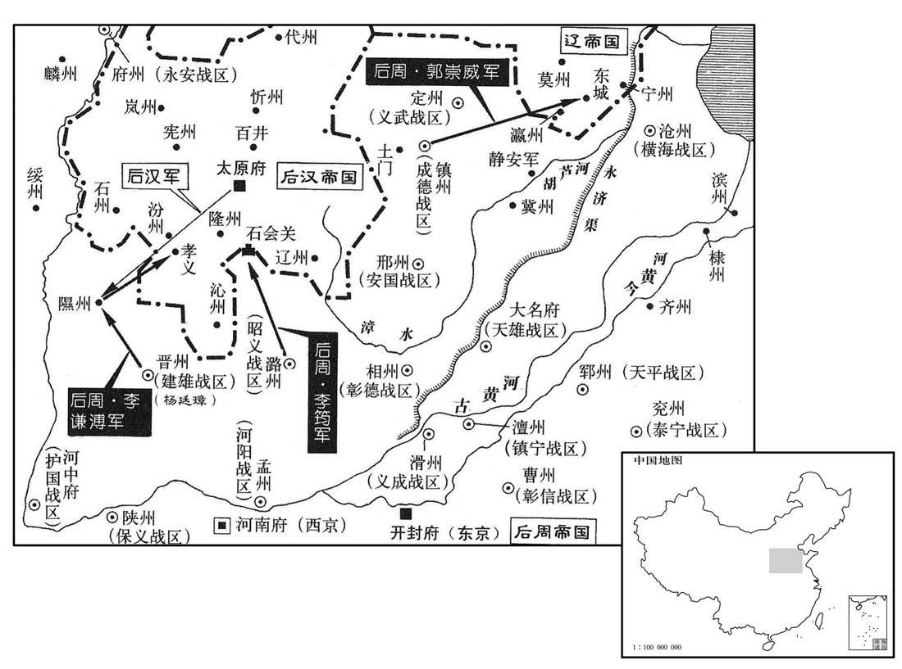
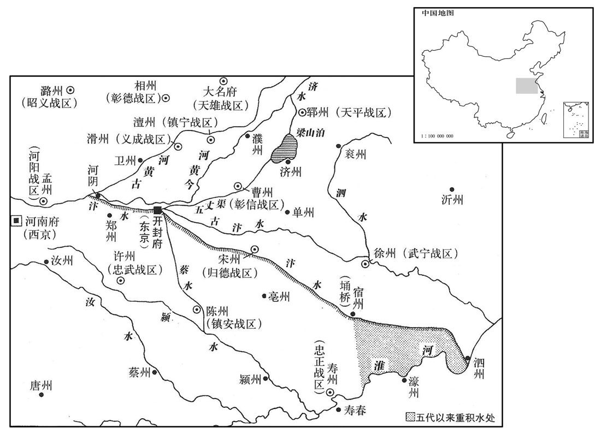
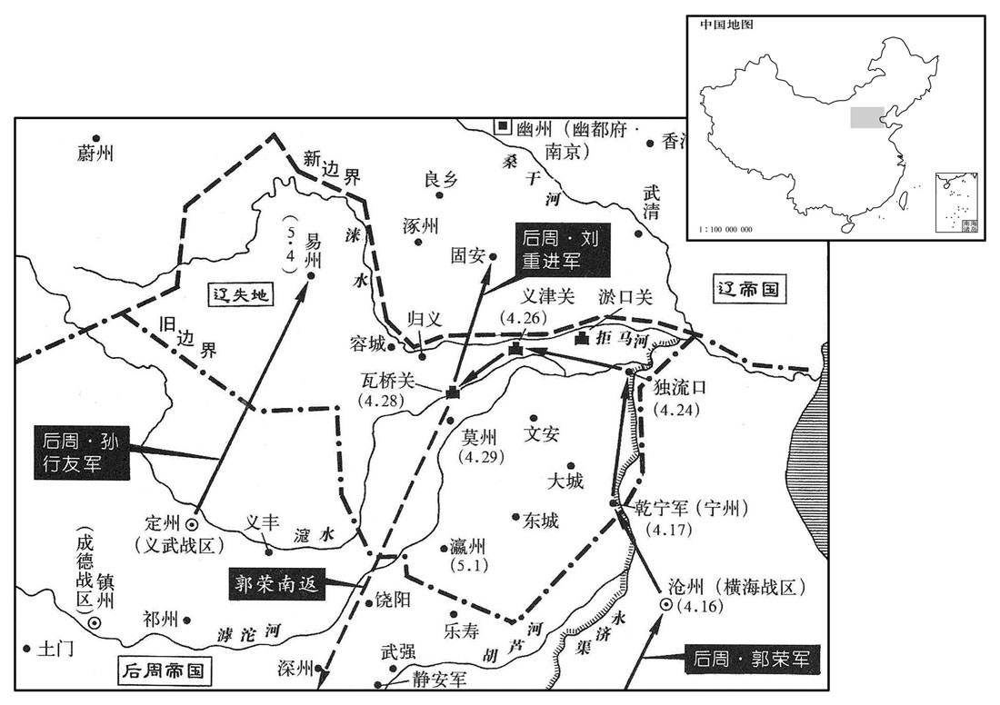

卷次与人物目录 / 卷294
资治通鉴 · 卷第二百九十四【后周纪五】
公元958年至公元959年 · 原文、白话与胡三省注
本页按胡注本编排保存全卷内容。白话采用本站所据译本，未可靠对应的内容另列说明；事件标题用于定位，并非原书文字。
本卷共128段原文，122段有译文对应，6段缺译或待核对。
卷第二百九十四【后周纪五】起着雍敦牂（戊午），尽屠维协洽（己未），凡二年。
卷首原文与注释
世宗睿武孝文皇帝下
公元958年 · 后周世宗睿武孝文皇帝显德五年
显德五年〔（戊午、九五八）〕
本年事件索引（现代整理）
- 后周废除匡国军建制
- 南唐改元中兴
- 后周王汉璋奏报攻克海州
- 后周任韩令坤权知扬州军府事
- 后周世宗命民夫疏通鹳水，战舰得以入长江
- 后周攻取静海军并打通与吴越的陆路
- 后蜀贬斥直言李昊王昭远误国的章九龄
- 后周攻克楚州，张彦卿与部众力战至死
- 荆南高保融派魏璘率舰队东下会师伐唐
- 后蜀在果州设置永宁军
- 南唐改天长县为雄州后，守将易文赟举城归降
- 后周世宗从楚州抵达扬州并筑小城驻军
- 司超与王审琦攻取舒州并俘获刺史施仁望
- 后周杨廷璋击退北汉攻城军，袭营获胜
- 后周世宗前往泰州
- 南唐大赦并改元交泰
- 南唐李景遂十次辞让太弟，李弘冀被立为太子
- 后周世宗至迎銮镇指挥水军击败南唐并进逼江口
- 南唐主请求传位太子并割让江北四州求和
- 吴越派战船与一万七千兵驻守通州南岸
- 南唐主再次请降称国主并献江北四州
- 后周世宗致书南唐安排撤军与交接城池事宜
- 后周世宗从迎銮镇返回扬州
- 后周命吴越与荆南军队撤回本国并赐犒军帛
- 后周在庐州设置保信军并任赵匡赞为节度使
- 南唐主遣冯延己献百万财物犒赏后周军
- 后周派宋延渥率水军巡逻长江
- 后周命地方官看守杨行密徐温等人的墓葬
- 南唐主遣徐辽代为祝寿
- 后周疏通汴口使黄河水直通淮河
- 后周世宗从扬州北返
- 后周新建太庙落成并迎入神主
- 吴越钱塘城南大火蔓延内城，钱弘俶亲自救火
- 后周世宗南征期间契丹乘虚入侵，世宗回师大梁命张永德备边
- 后周发生日食
- 后周世宗诏令赏赐南征士卒与淮南新附百姓
- 后周任赵匡胤领忠武节度使并调安审琦镇平卢
- 郭崇攻取契丹束城以报此前入寇之仇
- 南唐主避周太祖父讳改名李景并去帝号称国主
- 冯延己昔日鼓吹取中原，南唐臣服后遭常梦锡嘲讽
- 后周派冯延鲁钟谟出使南唐并赐御衣玉带与军帛
- 南唐请求海陵盐税以供军，后周准予岁给盐三十万斛
- 李筠攻破北汉石会关六寨，李谦溥又破孝义
- 荆南劝后蜀向后周称臣，孟昶以曾求和未获答复回绝
- 后周开始施行大周刑统
- 后周世宗命各地均定田租
- 留从效派蔡仲赟赴后周称藩
- 李景遂镇守洪州后与副手李征古失和
- 李弘冀毒杀太弟李景遂
- 南汉主刘鋹即位，宦官与女侍中掌握朝政
- 南唐在大梁设置进奏院
- 曹彬出使吴越不受馈赠，归国后奉诏收下并散给亲友
- 冯延鲁钟谟返回南唐，李景又派殷崇义赴后周祝寿
- 后周谋划伐蜀并任高防为西南面水陆制置使
- 后周遣返冯延鲁等南唐降将，南唐主弃而不用
- 高保融再次劝蜀主称臣，孟昶与将相商议后决意拒绝
- 后周派三十四名官员分行各州丈量田租并规范乡村编制
- 后周命宋延渥率水军巡江
- 高保融请求以水军配合后周讨伐后蜀
- 李玉误信情报袭击归安镇，全军覆没
- 后蜀部署诸军守备边境
- 后周将各色课户俸户归州县管理并发给官俸
- 宋齐丘陈觉李征古企图让南唐主禅位宋齐丘，陈乔力谏后作罢
- 钟谟指控宋齐丘等人谋篡，南唐主决定处罚齐丘陈觉李征古
- 后蜀任高彦俦为峡路招讨使
- 安审琦仆夫安友进在侍妾胁迫下参与谋杀安审琦
- 安审琦被侍妾与仆夫杀害，其子逮捕凶手
春，正月，乙酉，废匡国军。〔唐末，以同州置匡国军。〕
春季，正月，乙酉（初三），后周撤销匡国军。
唐改元中兴。
南唐改年号为中兴。
丁亥，右龙武将军王汉璋奏克海州。
丁亥（初五），后周右龙武将军王汉璋奏报攻克海州。
己丑，以侍卫马军都指挥使韩令坤权扬州军府事。
己丑（初七），后周世宗任命侍卫马军都指挥使韩令坤代理扬州军府事务。
上欲引战舰自淮入江，阻北神堰，不得渡；〔北神镇在楚州城北五里，吴王夫差沟通江、淮，后人于此立堰者，以淮水低，沟水高，防其泄也。舟行渡堰入淮。今号为平水堰。舰，户黯翻；下同。〕欲凿楚州西北鹳水以通其道，〔今楚州城西老鹳河是也。〕遣使行视，还言地形不便，计功甚多。〔行，下孟翻。还，从宣翻，又如字。〕上自往视之，授以规画，发楚州民夫浚之，旬日而成，用功甚省，巨舰数百艘皆达于江，〔艘，苏遭翻。〕唐人大惊，以为神。
后周世宗打算率领战舰从淮水进入长江，但受到北神堰阻挡，没法渡过，就打算开凿楚州西北的鹳水来通淮水、长江的河道。派遣使者巡视，回来说地形条件不便利，预计费工很多。世宗亲自前往视察，口授工程规划，征发楚州民夫疏通河道，十天便完成，化费工日很少，数百艘巨大战舰都直接到达长江，南唐人大为惊讶，认为神奇。
壬辰，拔静海军，始通吴越之路。〔先是，唐于海陵之东境置静海都镇制置院，西至海陵二百七十五里。宋白曰：静海军本扬州狼山镇地，南唐于狼山北立静海制置院，周得之，建静海军，寻升为通州。〕先是帝遣左谏议大夫长安尹日就等使吴越，语之曰：「卿今去虽泛海，比还，淮南已平，当陆归耳。」〔自静海军东南至江口，于狼山之西渡江登陵，抵福山镇，则苏州常熟县界，吴越之境也。先，悉荐翻。语，牛倨翻。此，必利翻。〕已而果然。
壬辰（初十），后周攻取静海军，开始打通与吴越的陆路。在这之前世宗派遣左谏议大夫长安人尹日就等人出使吴越，跟他们说：“爱卿此去虽然还要泛舟过海，但等到回来，淮南已经平定，必当从陆上返回了。”不久果真如此。
甲辰，蜀右补阙章九龄见蜀主，言政事不治，由奸佞在朝；〔朝，直遥翻。〕蜀主问奸佞为谁，指李昊、王昭远以对。蜀主怒，以九龄为毁斥大臣，贬维州录事参军。〔临乱之君，各贤其臣，卒之亡蜀者昊、昭远也。〕
甲辰（二十二日），后蜀右补阙章九龄谒见后蜀主，说政事没有治理好，是由于奸人佞臣在朝廷专权。后蜀主问这奸人佞臣是谁，章九龄手指李昊、王昭远来回答。后蜀主发怒，认为章九龄是毁谤大臣，贬为维州录事参军。
周兵攻楚州，踰四旬，唐楚州防御使张彦卿固守不下；乙巳，帝自督诸将攻之，宿于城下，丁未，克之。彦卿与都监郑昭业犹帅众拒战，〔帅，读曰率。〕矢刃皆尽，彦卿举绳床以鬬而死，所部千余人，至死无一人降者。〔唐失淮南，死于城郭封疆者犹有人焉。〕
后周军队进攻楚州，超过四十天，南唐楚州防御使张彦卿仍然坚守而无法攻下；乙巳（二十三日），后周世宗亲自监督众将攻城，住宿在城下，丁未（二十五日），攻克楚州。张彦卿与都监郑昭业仍率领部众抵抗战斗，弓箭
刀剑都用光了，张彦卿举起绳床来搏斗而死去，所部一千多人，至死没有一人
投降。
高保融遣指挥使魏璘〔璘，离珍翻。〕将战船百艘东下会伐唐，至于鄂州。
荆南高保融派遣指挥使魏率领战船百艘顺长江东下会同后周征伐南唐，到达鄂州。
庚戍，蜀置永宁军于果州，以通州隶之。
庚戌（二十八日），后蜀在果州设置永宁军，将通州隶属永宁军。
唐以天长为雄州，以建武军使易文赟为刺史。二月，甲寅，文赟举城降。〔赟，于伦翻。〕
南唐将天长县改为雄州，任命建武军使易文为刺史。二月，甲寅（
初二），易文率城投降。
戊午，帝发楚州；丁卯，至扬州，命韩令坤发丁夫万余，筑故城之东南隅为小城以治之。〔今扬州大城是也。扬州古城西据蜀冈，北包雷陂。治，直之翻。〕
戊午（初六），后周世宗从楚州出发；丁卯（十五日），到达扬州，命令韩令坤征发民夫一万多，在原城东南角修筑小城来作为扬州治所。
乙亥，黄州刺史司超奏与控鹤右厢都指挥使王审琦攻唐舒州，擒其刺史施仁望。
乙亥（二十三日），后周黄州刺史司超奏报与控鹤右厢都指挥使王审琦进攻南唐舒州，擒获舒州刺史施仁望。
丙子，建雄节度使真定杨廷璋奏败北汉兵于隰州城下。〔败，补迈翻。〕时隰州刺史孙议暴卒，廷璋谓都监、闲貛使李谦溥曰：「今大驾南征，泽州无守将，〔「泽州」当作「隰州」。〕河东必生心；若奏请待报，则孤城危矣。」即牒谦溥权隰州事，谦溥至则修守备。未几，北汉兵果至，〔几，居岂翻。〕诸将请速救之，廷璋曰：「隰州城坚将良，未易克也。」〔将，即亮翻。易，以豉翻。〕北汉攻城久不下，廷璋度其疲困无备，〔度，徒洛翻。〕潜与谦溥约，各募死士百余夜袭其营，〔九域志：晋州西北至隰州二百五十里。杨廷璋盖潜军而至，与隰州约，表里相应也。〕北汉兵惊溃，斩首千余级；北汉兵遂解去。
丙子（二十四日），后周建雄节度使真定人杨廷璋奏报在隰州城下击败北汉军队。当时隰州刺史孙议突然死亡，杨廷璋对都监、闲厩使李谦溥说：“如今皇上南下征伐，隰州没有守将，河东北汉必生觊觎之心，倘若奏报请示等待回复，隰州孤城就危险了。”立即签署书牒命李谦溥代理隰州军政，李谦溥到达后就进行守城准备。不久，北汉军队果然到来，众将请求迅速救援，杨廷璋说：“隰州城池坚固，守将杰出，不容易攻克。”北汉军攻城久攻不下，杨廷璋估计他们疲惫困乏没有准备，暗中与李谦溥约定，各招募敢死士兵一百多人深夜偷袭敌营，北汉军队惊慌溃逃，斩首一千多级；北汉军队于是撤退离去。
三月，壬午朔，帝如泰州。
三月，壬午朔（初一），后周世宗前往泰州。
丁亥，唐大赦，改元交泰。
丁亥（初六），南唐实行大赦，改年号为交泰。
唐太弟景遂前后凡十表辞位，且言：「今国危不能扶，请出就藩镇。燕王弘冀嫡长有军功，〔弘冀，唐主之嫡长子。军功，谓用柴克宏败吴越兵以解常州之围也，事见上卷三年。长，知两翻。〕宜为嗣，谨奏上太弟宝册。」〔上，时掌翻。〕齐王景达亦以败军辞元帅。唐主乃立景遂为晋王，加天策上将军、江南西道兵马元帅、洪州大都督、太尉，尚书令，以景达为浙西道元帅、润州大都督。景达以浙西方用兵，固辞，〔吴越之兵虽于常州败退，盖犹遥应中国。〕改抚州大都督。立弘冀为太子，参决庶政。弘冀为人猜忌严刻，景遂左右有未出东宫者，立斥逐之。〔为弘冀毒杀景遂张本。〕其弟安定公从嘉畏之，不敢预事，专以经籍自娱。〔从嘉是为后主煜。〕
南唐皇太弟李景遂前后共十次上表请求辞去继承人地位，并且说：“如今国家危难不能匡扶，请求出宫就任一方藩镇。燕王李弘冀是嫡长子又有军功，应该当继承人，谨奏奉上皇太弟的宝册。”齐王李景达也因为军队溃败辞去元帅之职。南唐主于是封李景遂为晋王，加官天策上将军、江南西道兵马元帅、洪州大都督、太尉、尚书令，任命李景达为浙西道元帅、润州大都督。李景达因浙西正在用兵，坚决推辞，改任抚州大都督。南唐主立李弘冀为皇太子，参预决定各种政务。李弘冀为人多疑尖刻，李景遂手下人还有没出东宫的，立即斥退赶走。他弟弟安定公李从嘉畏惧李弘冀，不敢参预政事，专门以书籍作为自我娱乐。
辛卯，上如迎銮镇，〔迎銮镇，本唐之白沙也。吴主杨溥至白沙，阅舟师，徐温自金陵来见，因以白沙为迎銮镇。白沙之地，本属江都，唐分江都置永贞县，吴为迎銮镇，宋为真州。〕屡至江口，遣水军击唐兵，破之。上闻唐战舰数百艘泊东蔀州，将趣海口扼苏、杭路，〔东閊洲，在泰州东南大江中，元是海屿沙岛之地。宋白曰：东閊洲在通州东南，通州海门县界。閊，音布。「州」，当作「洲」。〕遣殿前都虞候慕容延钊将步骑，右神武统军宋延渥将水军，循江而下。甲午，延钊奏大破唐兵于东閊州；上遣李重进将兵趣庐州。〔唐末，杨行密自庐州起，既建国，遂为重镇。周师渡淮，舒、蕲、黄先皆款附，独庐未下，盖宿兵多，周师不敢轻犯也。趣，七喻翻。〕
辛卯（初十），后周世宗前往迎銮镇，屡次到达长江口，派遣水军攻击南唐军队，打败敌军。世宗听说南唐数百艘战舰停泊在东州，将要赶赴入海口扼守通往苏州、杭州的路，便派遣殿前都虞候慕容延钊带领步兵、骑兵，右神武统军宋延渥带领水军，沿江而下。甲午（十三日），慕容延钊奏报在东州大败南唐军队；世宗派遣李重进率领军队赶赴庐州。
唐主闻上在江上，恐遂南渡，又耻降号称蕃，乃遣兵部侍郎陈觉奉表，〔考异曰：十国纪年：「遣枢密使陈觉奉表。」实录载其表云：「今遣左谏议大人、兵部侍郎臣陈觉躬听敕命。」盖当时所假之官耳。今从之。〕请传位于太子弘冀，使听命于中国。时淮南惟庐、舒、蕲、黄未下，〔蕲，渠希翻。〕丙申，觉至迎銮，见周兵之盛，白上，请遣人渡江取表，献四州之地，画江为境，以求息兵，江取表，献四州之地，画江为境，以求息兵，辞指甚哀。上曰：「朕本兴师止取江北，尔主能举国内附，朕复何求！」〔复，扶又翻。〕觉拜谢而之退。丁酉，觉请遣其属合门承旨刘承遇如金陵，上赐唐主书，称「皇帝恭问江南国主」，慰纳之。
南唐主闻知世宗在长江岸畔，恐怕就要南下渡江，又耻于贬降帝号改称藩臣，于是派遣兵部侍郎陈觉奉持表章，请求传位给太子李弘冀，让他听从后周的命令。当时淮南只有庐州、舒州、蕲州、黄州没有攻下，丙申（十五日），陈觉到达迎銮镇，看到后周军队的强盛，向世宗禀报，请求派人渡过长江拿取表章，进献四州土地，划江为界，来要求休战，言辞旨意非常悲哀。世宗说：“朕兴师出兵本只为取得江北之地，你的君主能够率国归附，朕还要求什么呢！”陈觉叩拜道谢而退下。丁酉（十六日），陈觉请求派遣他的属官阁门承旨刘承遇前往金陵，世宗赐给南唐主书信，说：“皇帝恭问江南国主”，安慰接纳他。
戊戍，吴越奏遣上直〔【章：乙十一行本「直」下有「都」字；孔本同。】〕指挥使．处州刺史邵可迁、秀州刺史路彦铢以战舰四百艘、士卒万七千人屯通州南岸。〔周既克静海军，置通州。通州南岸苏州常熟县福山镇之地，即东晋之南沙也。〕
戊戌（十七日），吴越奏报派遣上直指挥使、处州刺史邵可迁和秀州刺史路彦铢率领四百艘战舰、一万七千士兵驻守通州南面江岸。
唐主复遣刘承遇奉表称唐国主，请献江北四州，岁输贡物十〔【章：乙十一行本「十」上有「数」字；孔本同。】〕万。于是江北悉平，得州十四，县六十。〔光、寿、庐、舒、蕲、黄、滁、和、濠、泗、楚、扬、泰、通十四州。〕
南唐主再派刘承遇奉送表章自称唐国主，请求献出长江北面庐、舒、蕲、黄等四州，每年献送贡品十万。于是长江以北全部平定，得到十四个州、六十个县。
庚子，上赐唐主书，谕以：「缘江诸军及两浙、湖南、荆南兵并当罢归，其庐、蕲、黄三道，亦令敛兵近外。〔谓周所遣进攻庐、蕲、黄之军也。近外，谓近郊之外。〕俟彼将士及家属就道，可遣人召将校以城邑付之。〔将，即亮翻。校，户教翻。〕江中舟舰有须往来者，并令就北岸引之。」〔凡唐舟舰在北岸者，皆许令引就南岸。〕辛丑，陈觉辞行，又赐唐主书，谕以不必传位于子。
庚子（十九日），世宗赐给南唐主书信，告以：“沿长江各支军队和在两浙、湖南、荆南的军队都当撤回，其中庐州、蕲州、黄州三路军队，也下令把军队收回到近郊以外。等到三州城中将吏士兵及其家属上路南归以后，可以派人召唤我军将校并将城市都邑交付给他们。长江的船只有需要来往的，一并让他们到北岸来拉走。”辛丑（二十日），陈觉告辞上路，世宗又赐给南唐主书信，告诉他不必把君位传给儿子。
壬寅，上自迎銮复如扬州。
壬寅（二十一日），世宗从迎銮镇再次前往扬州。
癸卯，诏吴越、荆南军各归本道；赐钱弘俶犒军帛三万匹，高保融一万匹。〔吴越军临南沙，荆南军至鄂州，各犒之使罢归。犒，苦到翻。〕
癸卯（二十二日），后周世宗诏令吴越、荆南军队各自返回本地；赐给钱弘犒劳军队的绢帛三万匹，赐高保融一万匹。
甲辰，置保信军于庐州，以右龙武统军赵匡赞为节度使。
甲辰（二十三日），在庐州设置保信军，任命右龙武统军赵匡赞为节度使。
丙午，唐主遣冯延己献银、绢、钱、茶、榖共百万以犒军。〔银两、绢匹、钱贯、茶斤，榖石，各以万计，其数共为百万。〕
丙午（二十五日），南唐主派遣冯延巳贡献银、绢、钱、茶、谷总共百万以犒劳军队。
己酉，命宋延渥将水军三千溯江巡警。
己酉（二十八日），后周世宗命令宋延渥率领水军三千人沿江而上巡逻警戒。
庚戍，敕故淮南节度使杨行密、故升府节度使徐温等墓并量给守户；〔削其僭谥，存其故镇。升府即金陵。金陵，唐之升州，故曰升府。〕其江南群臣墓在江北者，亦委长吏以时检校。〔长，知两翻。〕
庚戌（二十九日），敕令已故淮南节度使杨行密、已故升府节度使徐温等人的墓全都根据需要给予守墓民户；其余江南群臣有先人坟墓在长江以北的，也委
托所在地方长官按时检查。
辛亥，唐主遣其临汝公徐辽代己来上寿。〔言奉酒上寿，非圣节也。帝生于九月二十四日。上，时掌翻。〕
辛亥（三十日），南唐主派遣临汝公徐辽代表自己前来献送祝寿礼品。
是月，浚汴口，导河流达于淮，于是江、淮舟懢始通。〔此即唐时运路也。自江、淮割据，运漕不通，水路湮塞，今复浚之。〕
当月，疏通汴口，引导黄河支流直达淮水，于是长江、淮水的船只开始通航。
夏，四月，乙卯，帝自扬州北还。〔还，从宣翻，又如字。〕
夏季，四月，乙卯（初四），后周世宗从扬州北上返回。

新作太庙成。庚申，神主入庙。〔太祖广顺三年，作太庙于大梁，至是始成。五代会要：太祖广顺元年七月，追尊高祖璟为睿和皇帝，庙号信祖；曾祖谌为明宪皇帝，庙号僖祖，祖蕴为翼顺皇帝，庙号义祖；考简为章肃皇帝，庙号庆祖。〕
后周大梁新造太庙建成。庚申（初九），神主牌位放入太庙。
辛酉夜，钱唐城南火，延及内城，官府庐舍几尽。〔几，居依翻。〕壬戍旦，火将及镇国仓，吴越王弘俶久疾，自强出救火；火止，谓左右曰：「吾疾因灾而愈。」众心稍安。
辛酉（初十）夜晚，吴越钱塘城南起火，延及内城，官家府第百姓房舍几乎烧尽。壬戌（十一日）清晨，大火即将烧到镇国仓，吴越王钱弘长期患病，自己勉强支撑着出去救火。大火止熄，钱弘对左右的人说：“我的病因这场火灾而痊愈。”众人的心稍许得到安慰。
帝之南征也，契丹乘虚入寇。壬申，帝至大梁，命〔【章：乙十一行本「命」下有「镇宁节度使」五字；孔本同；退斋校同。】〕张永德将兵备御北边。
后周世宗南下征伐，契丹军队乘虚入侵。壬申（二十一日），世宗到达大梁，命令张永德领兵到北部边界防备御敌。
五月，辛巳朔，日有食之。
五月，辛巳朔（初一），发生日食。
诏赏劳南征士卒及淮南新附之民。〔劳，力到翻。〕
后周世宗颁诏赏赐南下征伐的士兵和淮南新近归附的百姓。
辛卯，以太祖皇帝领忠武节度使，徙安审琦为平卢节度使。
辛卯（十一日），后周世宗任命宋太祖皇帝兼领忠武节度使，调任安审琦为平卢节度使。
成德节度使郭崇攻契丹束城，拔之，〔东城，汉勃海郡之东州县也，隋改曰东城，唐属瀛州。宋熙宁六年省东城为镇，属河间。〕以报其入寇也。
成德节度使郭崇进攻契丹束城，拔取，以此回报契丹军队的入侵。
唐主避周讳，更名景。〔避周信祖讳也。更，工衡翻。〕下令去帝号，称国主，凡天子仪制皆有降损，去年号，用周正朔，〔去，羌吕翻。考异曰：世宗实录、薛史，显德二年乙卯十一月伐淮南；唐之保大十三年也。三年正月、四年二月、十月三幸淮南。五年戊午三月，江北平，唐之交泰元年也。而江南录误以保大十五年事合十四年。十五年丁巳改交泰，五月去帝号，明年乃显德五年，又明年即建隆元年，中间实少显德六年。江南录最为差误，其记李升复姓，亦先一年。他事仿此，不可考按。故世宗取淮南年月，专以实录及薛史为据。〕仍告于太庙。左仆射、同平章事冯延己罢为太子太傅，门下侍郎、同平章事严续罢为少傅，枢密使、兵部侍郎陈觉罢守本官。
南唐主为避后周世宗祖先名讳，改名为景。下令取消帝号，只称国主，所有原来的天子仪仗规制都有所降低贬损，取消交泰年号，改用后周年号历法，并向太庙报告。左仆射、同平章事冯延己免职后为太子太傅，门下侍郎、同平章事严续免职后为少傅，枢密使、兵部侍郎陈觉免去同平章事保留原来官职。
初，冯延己以取中原之策说唐主，由是有宠。延己尝笑烈祖戢兵为龌龊，〔说，式芮翻。戢，则立翻。龌，于角翻。龊，敕角翻。〕曰：「安陆所丧纔数千兵，为之辍食咨嗟者旬日，〔谓晋高祖天福五年李承裕安州之败。事见二百八十二卷。丧，息浪翻。为，于伪翻。〕此田舍翁识量耳，安足与成大事！岂如今上暴师数万于外，而击球宴乐无异平日，真英主也！」延己与其党谈论，常以天下为己任，更相唱和。〔乐，音洛。更，工衡翻。和，户卧翻。〕翰林学士常梦锡屡言延己等浮诞，不可信；〔诞，徒旱翻。〕唐主不听，梦锡曰：「奸言似忠，陛下不悟，国必亡矣！」及臣服于周，延己之党相与言，有谓周为大朝者，梦锡大笑曰：「诸公常欲致君尧、舜，何意今日自为小朝邪！」众默然。〔朝，直遥翻。〕
当初，冯延己用夺取中原的策略来劝说南唐主，因此得到宠幸。冯延己曾经嘲笑南唐烈祖息兵是心胸狭窄，说：“安陆所丧失的才几千士兵，就为之禁食叹息有十天，这是乡村田舍老翁的见识度量，怎么能与他成就大事！哪像如今皇上几万大军风餐露宿在野外，而自己打球玩耍取乐与平日没有两样，真是英明的君主啊！”冯延己与他的同党谈论时，总是把治理天下作为自己的责任，互相唱和呼应。翰林学士常梦锡多次上言说冯延己等人浮夸荒诞，不可信任；南唐主不听从，常梦锡说：“奸臣的话好似忠言，陛下如果再不觉悟，国家必定灭亡了！”及至向后周臣服，冯延己党羽相互言谈，有称后周为大朝的，常梦锡大笑说：“诸位平常想引导国君成为统治天下的唐尧、虞舜，哪里想得到今日却自称小朝廷呢？”众人沉默无语。
自唐主内附，帝止因其使者赐书，未尝遣使至其国。己酉，始命太仆卿冯延鲁、卫尉少卿锺谟使于唐，〔二人者，本怕唐臣。〕赐以御衣、玉带等及犒军帛十万，并今年钦天历。〔犒，苦到翻。是年正月，始行王朴所上钦天历。〕
自从南唐主归附中原，后周世宗只通过对方使者赐给书信，还未曾派遣使者到唐国。己酉（二十九日），方始命令太仆卿冯延鲁、卫尉少卿钟谟出使到南唐，赐给御衣、玉带等物品以及犒劳军队的绢帛十万匹，并赐当年的《钦天历》。
刘承遇之还自金陵也，〔见上三月。还，从宣翻，又如字。〕唐主使陈觉白帝，以江南无卤田，〔海滨咸卤，可以煮盐。卤田，今谓之傼地。卤，郎古翻。傼，古斩翻。〕愿得海陵〔【章：乙十一行本「陵」下有「盐」字；孔本同；退斋校同。】〕监南属以赡军。帝曰：「海陵在江北，难以交居，〔言难使周之官吏与唐之官吏杂居也。〕当别有处分。」〔处，昌吕翻。分，扶问翻。〕至是，诏岁支盐三十万斛以给江南，所俘获江南士卒，稍稍归之。
刘承遇从金陵返回，南唐主派陈觉禀报世宗，因为江南地区没有盐卤之田，希望得到海陵监归属江南来供应军需。世宗说：“海陵在长江北岸，难以归属江南而使南、北官吏交错杂居，应当另有安排。”到这时，诏令每年拨出三十万斛盐给江南地区，所俘获的江南士兵，渐渐地释放回国。
六月，壬子，昭义节度使李筠奏击北汉石会关，拔其六寨。乙卯，晋州奏都监李谦溥击北汉，破孝义。〔孝义，汉中阳县地，后魏曰永安，唐贞观元年改曰孝义，属汾州，在州东南。宋熙宁五年，省孝义为镇，属介休县。宋白曰：孝义县，本汉慈氏县地，曹魏移中阳县于今理。永嘉后省入隰城，后魏又分隰城于今灵石县东三十里置永安县。贞观元年以县名与涪州县同，改为孝义，因县人郑兴有行义为名。〕
六月，壬子（初二），后周昭义节度使李筠奏报出击北汉石会关，攻拔北汉六个寨子。乙卯（初五），晋州奏报都监李谦溥出击北汉，攻破孝义。
高保融遣使劝蜀主称藩于周，蜀主报以前岁遣胡立致书于周而不答。〔见上卷上年。〕
荆南高保融派遣使者劝说后蜀主向后周称臣，后蜀主回复说去年派胡立送致书信给后周而未予答复。
秋，七月，丙戍，初行大周刑统。
秋季，七月，丙戌（初七），后周开始实行《大周刑统》。
帝欲均田租，丁亥，以元稹均田图徧赐诸道。〔时诏曰：「近览元稹长庆集，见在同州时所上均田表，较当时之利病，曲尽其情，俾一境之生灵，咸受其赐，传于方册，可得披寻，因令制素成图，直书其事。」稹，止忍翻。〕
后周世宗准备平均田租，丁亥（初八），将元稹《均田图》普遍赐发各地。
闰月，唐清源节度使兼中书令留从效〔唐置清源军于泉州。〕遣牙将蔡仲赟衣商人服，以绢表置革带中，间道来称藩。〔赟，于伦翻。衣，于既翻。间，古苋翻。〕
闰月，南唐清源节度使兼中书令留从效派遣牙将蔡仲穿着商人服装，把绢帛表章夹放在皮带中间，从偏僻小路前来称臣。
唐江西元帅晋王景遂之赴洪州也，〔见上三月。〕以时方用兵，启求大臣以自副，唐主以枢密副使、工部侍郎李征古为镇南节度副使。征古傲很专恣，景遂虽宽厚，久而不能堪，常欲斩征古，自拘于有司，左右谏而止，景遂忽忽不乐。〔乐，音洛。〕
南唐江西元帅晋王李景遂到洪州赴任，因当时正在用兵，奏请委派大臣作为自己的副手，南唐主任命枢密副使，工部侍郎李征古为镇南节度副使。李徵古傲慢凶狠专横跋扈，李景遂虽然宽容仁厚，但时间长了也不堪忍受，经常想斩了李征古，然后到有关执法部门自首，被左右人劝谏而住手，李景遂惆怅恍
惚闷闷不乐。
太子弘冀在东宫多不法，唐主怒，尝以球杖击之曰：「吾当复召景遂。」〔复，扶又翻。〕昭庆宫使袁从范从景遂为洪州都押牙，或谮从范之子于景遂，景遂欲杀之，从范由是怨望。弘冀闻之，密遣从范毒之；八月，庚辰，景遂击球渴甚，从范进浆，景遂饮之而卒。〔卒，子恤翻。〕未殡，体已溃；唐主不之知，赠皇太弟，谥曰文成。
太子李弘冀住在东宫多有不法行为，南唐主发怒，曾经用马杖打他说：“我应当重新召回李景遂。”昭庆宫使袁从范跟从李景遂为洪州都押牙，有人问李景遂说袁从范儿子的坏话，李景遂想杀他，袁从范因此产生怨恨。李弘冀闻知，秘密支使袁从范毒杀李景遂；八月，庚辰（初二），李景遂打马口渴得很，袁从范送上饮料，李景遂喝下而死去。还没等到收殓，身体已经溃烂。南唐主不知详情，追赠皇太弟，谥号为文成。
辛巳，南汉中宗殂，〔年三十九。〕长子〔【章：乙十一行本「子」下有「卫王」二字；孔本同；张校同。】〕继兴即帝位，更名鋹，〔长，知两翻。更，工衡翻。鋹，丑两翻。〕改元大宝。鋹年十六，国事皆决于宦官玉清宫使龚澄枢〔欧史曰：刘氏作离宫以游猎，有南宫、大明、昌华、甘泉、玩华、秀华、玉清、太微诸宫，皆置宫使领之。〕及女侍中卢琼仙等，台省官备位而已。
辛巳（初三），南汉中宗刘晟去世，长子刘继兴即皇帝位，改名为，改年号为大宝。刘十六岁，国事全部由宦官玉清宫使龚澄枢和女侍中卢琼仙
等人裁决，朝廷台、省各部官员只是虚有其名而已。
甲申，唐始置进奏院于大梁。〔臣属故也。〕
甲申（初六），南唐开始在大梁设置进奏院。
壬辰，命西上合门使灵寿曹彬使于吴越，赐吴越王弘俶骑军钢甲二百，〔钢，古郎翻；坚铁也。〕步军甲五千及他兵器。彬事毕亟返，不受馈遗，〔遗，唯季翻；下以遗同。〕吴越人以轻舟追与之，至于数四，彬曰：「吾终不受，是窃名也。」尽籍其数，归而献之。帝曰：「向之奉使，乞伹无厌，〔厌，于盐翻。〕使四方轻朝命。〔朝，直遥翻。〕卿能如是，甚善；然彼以遗卿，卿自取之。」彬始拜受，悉以散于亲识，家无留者。
壬辰（十四日），后周世宗命令西上阁门使灵寿人曹彬出使吴越，赐给吴越王钱弘二百副骑兵钢铠甲、五百副步兵钢铠甲和其它兵器。曹彬事情完毕即刻返回，不接受馈赠，吴越人划着轻便小船追送礼品，推辞再三，曹彬说：“我最终仍不接受，这是沽名钓誉啊。”全部登录礼品数量，返归后献上。世宗说：“以前奉命出使的人，索求没个满足，使得四方之人轻视朝廷命令。爱卿能够如此，非常好；然而别人既已将此馈赠爱卿，爱卿自可取走。”曹彬这才跪拜接受，全部散发给亲近熟人，家中一点没留。
辛丑，冯延鲁、锺谟来自唐，唐主手表谢恩，〔手表者，手书之。〕其略曰：「天地之恩厚矣，父母之恩深矣，子不谢父，人何报天，惟有赤心，可酬大造。」又乞比藩方，赐诏书。又称：「有情事令锺谟上奏，乞令早还。」〔还，从宣翻，又如字。〕唐主复令谟白帝，欲传位太子。〔复，扶又翻；下复还同。〕九月，丁巳，以延鲁为刑部侍郎、谟为给事中。唐〔【章：乙十一行本「唐」上有「己未，先遣谟还，赐书谕以未可传位之意」十六字；孔本同；张校同；退斋校同。】〕主复遣吏部尚书、知枢密院殷崇义来贺天清节。〔帝生于九月二十四日，以为天清节。〕
辛丑（二十三日），冯延鲁、钟谟从南唐而来，南唐主亲书表章感谢皇恩，表章大致说：“天地的恩泽真厚啊，父母的恩泽真深啊，子女无法感谢父母，人们怎么报答天地，只有赤诚之心，可以回报大恩大德。”又请求与四方藩镇同列，降赐诏书。又说：“有情况让钟谟上奏，乞求让他早日返回。”南唐主又让钟谟禀报世宗，打算传位给太子。九月，丁巳（初九），后周世宗任命冯延鲁为刑部侍郎、钟谟为给事中。南唐主又派遣吏部尚书、知枢密院殷崇义前来祝贺世宗生日天清节。
帝谋伐蜀，冬，十月，己卯，以户部侍郎高防为西南面水陆制置使，右赞善大夫李玉为判官。
后周世宗谋划伐后蜀，冬季，十月，己卯（初二），任命户部侍郎高防为西南面水陆制置使、右赞善大夫李玉为判官。
甲午，帝归冯延鲁及左监门卫上将军许文稹、右千牛卫上将军边镐、卫尉卿周廷构于唐。〔冯延鲁被擒见二百九十二卷三年。许文稹、边镐被擒见上卷上年。周廷构降亦见是年。〕唐主以文稹等皆败军之俘，弃不复用。〔复，扶又翻。〕
甲午（十七日），后周世宗将冯延鲁和左监门卫上将军许文镇、右千牛卫上将军边镐、卫尉卿周廷构送归给南唐。南唐主因许文稹等人都是打败仗的俘虏，弃置不再任用。
高保融再遗蜀主书，〔先遗书，见上六月。〕劝称臣于周，蜀主集将相议之，李昊曰：「从之则君父之辱，违之则周师必至，诸将能拒周乎﹖」诸将皆曰：「以陛下圣明，江山险固，岂可望风屈服！秣马厉兵，正为今日。〔为，于伪翻。〕臣等请以死卫社稷！」丁酉，蜀主命昊草书，极言拒绝之。
荆南高保融再次给后蜀主去信，规劝他向后周投降称臣，后蜀主召集将相商议此事，李昊说：“听从他就是国君先父的耻辱，违背他周朝军队必定到达，众将能够抵御周军吗？”众将都说：“依靠陛下的圣明，江山的险固，岂能望风投降！秣马厉兵长期战备，正是为了今日抵御外敌。我们请求用生命来保卫国家！”丁酉（二十一日），后蜀主命令李昊起草回信，慷慨陈辞拒绝劝降。
诏左散骑常侍须城艾颍等三十四人分行诸州，均定田租。〔须城县带郓州，即唐之须昌县，后唐避献祖庙讳，改曰须城。艾，姓也。晏子春秋，齐有大夫艾孔。风俗通，庞俭母艾氏。行，下孟翻。〕庚子，诏诸州并乡村，率以百户为团，团置耆长三人。〔耆，老也。每团以老者三人为之长。长，知两翻。〕帝留心农事，刻木为耕夫、蚕妇，置之殿庭。
后周世宗诏令左散骑常侍须城人艾颍等三十四人分别视察各州，按地多少均衡确定田租。庚子（二十三日），诏令各州合并乡村，一般以百户为一团，每团设置年老的团长三人。世宗留意农事，用木头刻成耕田农夫、养蚕农妇，安放在宫殿庭院中。
命武胜节度使宋延渥以水军巡江。
后周世宗命令武胜节度使宋延渥率领水军巡视长江。
高保融奏，闻王师将伐蜀，请以水军趣三峡，〔趣，七喻翻。〕诏褒之。
荆南高保融上奏，听说王师将要征伐后蜀，请求率领水军赶赴三峡，后周世宗诏令嘉奖他。
李玉至长安，或言「蜀归安镇在长安南三百余里，可袭取也。」〔归安镇，当在蜀金州界。〕玉信之，牒永兴节度使王彦超，索兵二百，彦超以为归安道阻隘难取，〔索，山客翻。隘，乌懈翻。〕玉曰：「吾自奉密旨。」彦超不得已与之。玉将以往，〔将，即亮翻。〕十二月，蜀归安镇遏使李承勋据险邀之，斩玉，其众皆没。
李玉到达长安，有人说：“蜀归安镇在长安南面三百多里，可以偷袭夺取。”李玉听信这话，投牒给永兴节度使王彦超，索求二百士兵，王彦超认为归安道路险恶狭窄难以攻取，李玉说：“我自奉有密旨。”王彦超不得已给他二百士兵。李玉带领士兵前往，十二月，后蜀归安镇遏使李承勋占据险要地形拦击，斩杀李玉，他的士兵全部覆没。
乙酉，蜀主以右卫圣步军都指挥使赵崇韬为北面招讨使，丙戍，以奉銮肃卫都指挥使、武信节度使兼中书令孟贻业为昭武、文州都招讨使，〔昭武军，利州。自利州以至文州，委以控扼江油、剑阁之险。〕左卫圣马军都指挥使赵思进为东面招讨使，山南西道节度使韩保贞为北面都招讨使，将兵六万，分屯要害以备周。
乙酉（初九），后蜀君主任命右卫圣步军都指挥使赵崇韬为北面招讨使，丙戌（初十），任命奉銮肃卫都指挥使、武信节度使兼中书令孟贻业为昭武、文州都招讨使，左卫圣马都指挥使赵思进为东面招讨使，山南西道节度使韩保贞为北面都招讨使，领兵六万，分别驻守要害地段来防御后周。
丙戍，诏凡诸色课户及俸户并勒归州县，〔唐初，诸司置公廨本钱，以贸易取息，计员多少为月料。其后罢诸司公廨本钱，以天下上户七千人为胥士，而收其课，计官多少而给之，此所谓课户也。唐又薄敛一岁税，以高户主之，月收息给俸，此所谓俸户也。〕其幕职、州县官自今并支俸钱及米麦。
丙戌（初十），后周世宗诏令所有各种课户和俸户一律统归州县管理，所有幕职官、州县官从今开始一律由州县开支俸钱和粮食。
初，唐太傅兼中书令楚公宋齐丘多树朋党，欲以专固朝权，〔朝，直遥翻。〕躁进之士争附之，推奖以为国之元老。枢密使陈觉、副使李征古恃齐丘之势，尤骄慢。及许文稹等败于紫金山，觉与齐丘、景达自濠州遁归，〔事见上卷上年。〕国人忷惧。〔忷，许拱翻。〕唐主尝叹曰：「吾国家一朝至此！」因泣下。征古曰：「陛下当治兵以扞敌，〔治，直之翻。〕涕泣何为！岂饮酒过量邪，将乳母不至邪﹖」唐主色变，而征古举止自若。会司天奏：「天文有变，人主宜避位禳灾。」唐主乃曰：「祸难方殷，〔禳，如羊翻。难，乃旦翻。〕吾欲释去万机，栖心冲寂，谁可以托国者﹖」征古曰：「宋公，造国手也，陛下如厌万机，何不举国授之！」觉曰：「陛下深居禁中，国事皆委宋公，先行后闻，臣等时入侍，谈释、老而已。」唐主心愠，〔愠，于运翻。〕即命中书舍人豫章陈乔草诏行之。〔洪州，豫章郡。〕乔惶恐请见，曰：「陛下一署此诏，臣不复得见矣！」〔见，贤遍翻。复，扶又翻。〕因极言其不可。唐主笑曰：「尔亦知其非邪﹖」乃止。由是因晋王出镇，以征古为之副，〔事见上。〕觉自周还，〔还，从宣翻，又如字。〕亦罢近职。
当初，南唐太傅兼中书令楚公宋齐丘大肆拉帮结伙、培植党羽，想以此垄断朝廷大权，浮躁急进之士争相攀附，推崇夸奖宋齐丘为国家元老。枢密使陈觉、副使李徵古倚仗宋齐丘的势力，尤其骄横傲慢。及至许文稹等在紫金山溃败，陈觉与宋齐丘、李景达从濠州逃跑回来，国中之人非常恐惧。南唐主曾经感叹说：“我的国家一刹时竟到了这个地步！”因而流下眼泪。李徵古说：“陛下应当整顿军队来抵抗敌人，流泪哭泣干什么！难道是喝酒过量了吗，还是奶妈没到呢？”南唐主脸色大变，而李征古言谈举止仍从容自如。适逢司天奏报：“天象有大变，人主应该避位祈求消灾。”南唐主于是说：“祸乱灾难正频繁，我想放弃君位摆脱政务，让心境处于淡泊寂静之中，但可以将国家托付给谁呢？李徵古说：“宋公是治理国家的高手，陛下如果讨厌政务，何不把国家交授给他！”陈觉说：“陛下深居在宫中，国家大事都委托给宋公，先处理后报告，我们时常入宫侍候，只谈释迦牟尼、老子罢了。”南唐主心中怨恨，立即命令中书舍人豫章人陈乔起草诏书实行。陈乔恐惧不安请求谒见，说：“陛下一旦签署这项诏令，我便不再能见陛下了。”就极力陈述不可如此的道理。南唐主笑着说：“你也知道那样不行吗？”于是作罢，因此借晋王出任藩镇之机，任命李徵古为他副手，陈觉从后周返回，也被撤销朝廷近臣之职。
锺谟素与李德明善，以德明之死怨齐丘；〔李德明死见上卷三年。〕及奉使归唐，言于唐主曰：「齐丘乘国之危，遽谋篡窃，陈觉、李征古为之羽翼，理不可容。」陈觉之自周还，〔见上三月。〕矫以帝命谓唐主曰：「闻江南连岁拒命，皆宰相严续之谋，当为我斩之。」〔为，于伪翻。〕唐主知觉素与续有隙，固未之信。锺谟请覆之于周，〔审覆其言之虚实于周也。〕唐主乃因谟复命，上言：「久拒王师，皆臣愚迷，非续之罪。」帝闻之，大惊曰：「审如此，则续乃忠臣，〔言严续果能为其主设谋以拒周，乃忠臣也。〕朕为天下主，岂教人杀忠臣乎！」谟还，以白唐主。〔还，从宣翻。〕
钟谟平素与李德明要好，因为李德明的死而怨恨宋齐丘；及至奉命出使回归南唐，对南唐主进言道：“宋齐丘乘国家危难，便马上图谋篡国夺位，陈觉、李征古当他的帮手，天理不容。”陈觉从后周回来，伪造后周世宗命令对南唐主说：“听说江南多年抗拒诏令，都是宰相严续的主意，必当替我斩了他。”南唐主明知陈觉素来与严续有矛盾，本来就不相信他的话。钟谟请求到后周核对，南唐主于是通过钟谟回复命令，上言说：“长时间抗拒王师，都是我的愚昧糊涂，不是严续的罪过。”后周世宗闻悉，大为惊讶，说：“确实如此的话，那严续乃是忠臣，朕为天下之主，岂能教唆人杀害忠臣呢！”钟谟回国，将情况禀报南唐主。
唐主欲诛齐丘等，复遣谟入禀于帝。〔复，扶又翻。〕帝以异国之臣，无所可否。己亥，唐主命知枢密院殷崇义草诏暴齐丘、觉、征古罪恶，听齐丘归九华山旧隐，官爵悉如故；〔宋齐丘隐九华山，见二百七十七卷唐明宗长兴二年，吴睿皇之太和三年也。〕觉责授国子博士，宣州安置；征古削夺官爵，赐自尽；党与皆不问。遣使告于周。
南唐主打算诛杀宋齐丘等人，又派遣钟谟入朝向后周世宗禀报。世宗因为是别国的臣子，不置可否。己亥（二十三日），南唐主命令知枢密院殷崇义起草诏书公布宋齐丘、陈觉、李徵古的罪恶，允许宋齐丘返归九华山旧日隐居之地，官职爵位全部照旧；陈觉被贬谪授于国子博士，送往宣州安置；李徵古削夺官职爵位，赐命自杀；他们的党羽都不作追究。派遣使者向后周报告。
丙午，蜀以峡路巡检制置使高彦俦为招讨使。
丙午（三十日），后蜀任命峡路巡检制置高彦俦为招讨使。
平卢节度使、太师、中书令陈王安审琦仆夫安友进与其嬖妾通，〔嬖，卑义翻，又必计翻。〕妾恐事泄，与友进谋杀审琦，友进不可，妾曰：「不然，我当反告汝。」友进惧而从之。
平卢节度使、太师、中书令陈王安审琦的车夫安友进同安审琦的爱妾私通，这个侍妾怕事情泄露，就与安友进密谋杀死安审琦，安友进认为不可，侍妾说：“不这样的话，我必定反过来告发你。”安友进恐惧而听从她的主意。
译本中未与胡注本可靠对应的内容
以下另列供核对版本差异，不并入胡注本正文。
译本所附古文
[45]十一月，庚戌，敕窦俨编集《大周通礼》、《大周正乐》。 >[45]>十一月，庚戌（初四），后周世宗>敕令窦俨编纂《大周通礼》、《大周正乐》。
译本白话
辛亥，南汉葬文武光明孝皇帝于昭陵，庙号中宗。
辛亥（初五），南汉将文武光明孝皇帝安葬在昭陵，庙号为中宗。
译本所附古文
[47]乙丑，唐主复遣礼部侍郎钟谟入见。
译本白话
乙丑（十九日），南唐主又派遣礼部侍郎钟谟入朝谒见。
公元959年 · 后周世宗睿武孝文皇帝显德六年
六年〔（己未、九五九）〕
上传原文的注释括号有异常，字符原样保留；无法可靠划分的段落默认全文显示。
本年事件索引（现代整理）
- 后周世宗命窦俨与王朴考定雅乐
- 王朴论述古代音律与唐末以来雅乐缺失
- 王朴论述古代律制与雅乐衰废
- 王朴上书提出以律准推演八十一调
- 世宗采纳王朴新法，太常验证音律和谐
- 宋齐丘被拘九华山，自缢而死，谥丑缪
- 常梦锡生前屡谏远离宋齐丘，齐丘死后唐主追悔
- 后周疏浚汴水、蔡水与五丈渠以通漕运
- 后周核查田亩，减免三万八千顷税额
- 淮南饥荒，世宗下令贷米赈济
- 枢密使王朴去世，世宗临丧恸哭
- 世宗亲征契丹，命孙行友守西山并安排留守
- 韩通修治沧州以北水道，开三十六游口通瀛莫
- 世宗抵干宁军，契丹宁州刺史王洪举城降
- 后周水陆军并进，契丹守将献益津关
- 水道渐窄，世宗弃舟登陆西进
- 后周收复瓦桥关，莫州、瀛州相继归降
- 世宗议取幽州，因身体不适停驻瓦桥关
- 孙行友攻取易州，擒杀契丹刺史李在钦
- 后周改瓦桥、益津二关为雄州、霸州
- 世宗命李重进出土门攻北汉
- 韩令坤、陈思让分别驻守霸州与雄州
- 世宗自雄州南还
- 李重进在百井击败北汉军，斩首二千余级
- 世宗回到大梁
- 李筠攻取辽州，俘获刺史张丕
- 黄河在原武决口，后周征夫堵塞
- 留从效请求在京师设置进奏院，世宗劝其仍奉旧主
- 李景听从钟谟建议，修缮城池并增兵备战
- 司马光评唐庄宗善战而不知治国，称世宗有帝王之度
- 杨廷璋攻北汉，收降十三座堡寨
- 世宗立符氏为皇后
- 世宗封皇子宗训为梁王、宗让为燕公
- 世宗任用魏仁浦为相，并擢升王溥、范质等
- 张昭举荐李涛为相，称其能察国家安危大节
- 世宗数欲任王著为相，因其嗜酒无检而作罢
- 世宗病危托付后事，遗命王著继任宰相
- 史臣评世宗英武勤政、知人善任而用法过严
- 柴宗训即位为后周恭帝，年仅七岁
- 后周任李重进为淮南节度使，韩通领天平节度
- 后周恭帝即位后大赦
- 南唐群臣议迁都洪州，唐镐赞成迁都
- 南唐钱少物贵，采纳铸造大钱与铁钱之议
- 蜀主任宰相李昊兼领武信节度使，李起谏止
- 后周封皇弟宗让、熙谨、熙诲为王
- 南唐太子李弘冀去世，张洎论谥改为文献
- 钟谟屡次奉使后周，因受两国礼遇而骄横
- 钟谟失势遭贬流放，与张峦同被处死
- 后周安葬世宗于庆陵
- 南汉宦官构陷锺允章谋反，允章与二子被杀
- 南汉主举行圜丘祭祀并大赦，宦官专权益甚
- 南唐改洪州为南昌府并建南都
- 徐及甫谋奉王令仪起事败露，令仪被赐死
- 窦仪坚持奉诏礼仪，唐主冒雪于庭中拜诏
- 荆罕儒遣人刺杀契丹使者，契丹与南唐断交
- 司马光进呈编成的《资治通鉴》
- 司马光陈述编纂《资治通鉴》的缘起、过程与规模
- 司马光请神宗阅览《资治通鉴》，鉴察兴衰得失
- 司马光陈述进书以尽忠报恩的心愿
- 司马光奉表进呈《资治通鉴》
春，正月，癸丑，审琦醉熟寝，妾取审琦所枕剑〔枕，职任翻。〕授友进而杀之，仍尽杀侍婢在帐下者以灭口。后数日，其子守忠始知之，执友进等寛之。〔寛，古瓦翻。〕
春季，正月，癸丑（初七），安审琦喝醉酒熟睡，侍妾取出安审琦所枕的剑交给安友进而杀死他，并且将在帐下服侍的婢女全部杀死灭口。事后数日，安审琦的儿子安守忠才知道真相，抓住安友进等人将他们凌迟处死。
初，有司将立正仗，宿设乐县于殿庭，〔前一夕设之，谓之宿设。县，读曰悬；下同。〕帝观之，见锺磬有设而不击者，问乐工，皆不能对。乃命窦俨讨论古今，考正雅乐。王朴素晓音律，帝以乐事诣之，朴上疏，以为：
「礼以检形，乐以治心；〔治，直之翻。〕形顺于外，心和于内，然而天下不治者未之有也。是以礼乐修于上，万国化于下，圣人之教不肃而成，其政不严而治，〔孝经所载孔子之言。治，直吏翻。〕用此道也。夫乐生于人心而声成于物，物声既成，复能感人之心。〔复，扶又翻。〕
两版字句有差异，建议核对原文。
考定校正雅乐。王朴一向通晓音律，世宗询问他雅乐之事，王朴上书，认为：
“礼仪是用来规范形体的，音乐是用来陶冶心灵的；形体在外表恭顺，心灵在
内部平和，这样而天下还不太平的是没有的。所以礼乐在朝廷上修成实行，天
下万国就会感化归服，圣人的教化不峻急而成功，圣人的政令不严厉而大治，就
昔黄帝吹九寸之管，得黄锺正声，半之为清声，倍之为缓声，三分损益之以生十二律。〔三分其一而损益之，上生下生而十二律备矣。〕十二律旋相为宫以生七周，为一均。凡十二均、八十四调而大备。遭秦灭学，历代治乐者罕能用之。〔朴之言曰：自秦而下，旋宫声废，逮东汉虽有大予丞鲍邺兴之，亦人亡而音息。汉至隋垂十代，凡数百年，所存者黄锺之宫一调而已。十二律中唯用七声，其余五律谓之哑锺，盖不用故也。〕唐太宗之世，祖孝孙、张文收考正大乐，备八十四调；〔见一百九十二卷贞观元年。调，徒钓翻；下同。〕安、史之乱，器与工什亡八九，至于黄巢，荡尽无遗。时有太常博士殷盈孙，按考工记，铸镈锺十二，编锺二百四十。〔大锺谓之镈。小锺十六枚同在一虡谓之编锺。镈，补各翻。〕处士萧承训校定石磬，今之在县者是也。虽有锺磬之状，殊无相应之和，其镈锺不问音律，但循环而击，编锺、编磬徒悬而已。丝、竹、匏、土仅有七声，名为黄锺之宫，其存者九曲。考之三曲协律，六曲参涉诸调；盖乐之废缺，无甚于今。
两版字句有差异，建议核对原文。
“从前黄帝吹九寸长的竹管，得到黄钟的正声，截去一半变为清声，加长一倍变为缓声，用增减三分之一长度的方法产生十二音律。十二音律轮流作为宫音，都可产生七个调，成为一均。总共有十二个均、八十四个调，从而均、调全部齐备。但是遭到秦代消灭学术的厄运，历代研习演奏音乐的人很少有能使用它的。唐太宗的时代，祖孝孙、张文收考定校正雅乐，配齐八十四个调；安禄山、史思明作乱，乐器和乐师损失十分之八九，到了黄巢造反，便荡然无存。当时有太常博士殷盈孙，根据《考工记》，铸造钟十二枚、编钟二百四十枚，处士萧承训校定石磬，如今悬挂的就是。虽然有钟、磬的形状，但一点都没有相应的和谐，那钟磬也不问是什么音律，只是循环敲打、编钟、编磬白白地挂着而已。丝、竹、、土等各种质地的乐器也只有七个声音，称为黄钟之宫，保存下来的有九个曲子。校核九个曲子，三个曲子合符音律，六个曲子夹杂各种音调；音乐的旷废遗缺，没有比当今更严重的了。
陛下武功既着，垂意礼乐，以臣尝学律吕，宣示古今乐录，命臣讨论。臣谨如古法，以秬黍定尺，长九寸径三分为黄锺之管，〔匏，蒲交翻。论，卢昆翻。秬，音臣，黑黍也。长，直亮翻。〕与今黄锺之声相应，因而推之，得十二律。以为众管互吹，用声不便，乃作律准，十有三弦，其长九尺，〔律准，盖梁武帝之遗法，而梁武帝又本之京房。〕皆应黄锺之声，以次设柱，为十一律，及黄锺清声，旋用七律以为一均。为均之主者，宫也，征、商、羽、角、变宫、变征次焉。〔征，陟里翻。〕发其均主之声，归于本音之律，迭应不乱，乃成其调，凡八十一调。〔朴之言曰：奉诏遂依周法，以秬黍校定尺度，长九寸，虚径三分，为黄锺之管，与见在黄锺之声相应。以上下相生之法推之，得十二律管。以为众管互吹，用声不便，乃作律准，十三弦宣声，长九尺张弦，各如黄锺之声；以第八弦六尺设柱，为林锺；第三弦八尺设柱，为太簇；第十弦五尺三寸四分设柱，为南吕；第五弦七尺一寸三分设柱，为姑洗；第十二弦四尺七寸五分设柱，为应锺；第七弦六尺三寸三分设柱，为蕤宾；第二弦八尺四寸四分设柱，为大吕；第九弦五尺六寸三分设柱；为夷则；第四弦七尺五寸一分设柱，为夹锺；第十一弦五尺一分设柱，为无射；第六弦六尺六寸八分设柱，为中吕；第十三弦四尺五寸设柱，为黄锺清声。十二声中，旋用七声为均，为均之主者唯宫，征、商、羽、角、变宫、变征次焉。发其均主之声，归乎本音之律，七声迭应而不乱，乃成其调。均有七调，声有十二均，合八十四调，歌奏之曲出焉。旋宫之声久绝，一日而补，出臣独见。通鉴撮其要，今备载之。〕此法久绝，出臣独见，乞集百官校其得失。」
“陛下武功既已卓著，开始注意振兴礼乐，因为臣下曾经学过律吕之术，便公布古今音乐著录，命令臣下探讨研究。臣下谨慎地按照古代的方法，用黑黍子粒来定出尺寸，长九寸、直径三分的作为黄钟律管，与当今黄钟的声音相互应合，以此推算，得出十二音律。因为做许多律管交替吹奏，使用听声不方便，于是制作律准，共有十三条弦，其长九尺，所有的音都应合黄钟的声音，依次设置架弦的码子，调成林钟、太簇、南吕、姑洗、应钟、蕤宾、大吕
、夷则、夹钟、无射、中吕等十一音律和黄钟清声，轮番使用七个音律成为一均。作为均的主音，首先是宫，其次是徵、商、羽、角、变宫、变徵。发出该均主音之声，最后回归到本音的音律，重迭应和而不杂乱，才能构成一调，总共八十一调。这个方法长期失传，出于臣下独自见解，请求召集百官较考其得失正误。
诏从之。百官皆以为然，乃行之。〔时兵部尚书张昭等议曰：「昔帝鸿氏之作乐也，候八节之风声，测四时之正气。气之清浊不可以笔授，声之善否不可以口传，故凫氏铸锺，伶伦截竹，为律吕相生之算，宫商正和之音，乃播之于管弦，宣之于锺石，然后覆载之情欣合，阴阳之气和同，八气从律而不奸，五声成文而不乱；空桑、孤竹之韵足以礼神，云门、大夏之容无亏观德。然月律有旋宫之法，备于太师之职。经秦灭学，雅道陵夷。汉初制氏所调，唯存鼓舞，旋宫十二均更用之法，世莫得闻。汉元帝时，京房善易、别音，探求古义，以周官均法，每月更用五音，乃至准调，旋相为宫，成六十调。又以日法析为三百六十，传于乐府，而编悬复旧，律吕无差。遭汉中微，雅音沦缺，京房律准，屡有言者，事终不成。钱乐空记其名，沉重但条其说，六十律法，寂寥不嗣。梁武帝素精音律，自造四通十二笛以叙八音，又引古五正、二变之音，旋相为宫，得八十四调，与律准所调，音同数异。侯景之乱，其音又绝。隋朝初定雅乐，群党沮议，历载不成。而沛公郑译因龟兹琵琶七音以饮月律，五正、二变，七调克谐，旋相为宫，复为八十四调。工人万宝常又减其丝数，稍令古淡。隋高祖不重雅乐，令群臣集议，博士何妥驳奏，其郑、万所奏八十四调并废。隋代郊庙所奏，惟黄锺一均，与五郊迎气，杂用蕤宾，但七调而已；其余五锺，悬而不作。三朝宴乐，用缦乐九部，迄于革命，未能改更，唐太宗爰命旧工祖孝孙、张文收整比郑译、宝常所均七音八十四调，方得丝管并施，锺石俱奏，七始之音复振，四厢之韵皆调。自安、史乱离，咸秦荡覆，崇牙树羽之器，扫地无余，戛击搏拊之工，穷年不嗣，郊庙所奏，何异南箕，波荡不还，知音殆绝。臣等窃以音之所起，出自人心，夔、旷不能长存，人事不能常泰，人亡则音息，世乱则乐崩，若不得知礼乐之情，安明制作之本！臣等据枢密使王朴条奏，采京房之准法，练梁武之通音，考郑译、宝常之七均，校孝孙、文收之九变，积黍累以审其度，听声诗以测其情，依权衡嘉量之前文，得备数和声之大旨，施于锺虡，足洽箫韶。臣等今月十九日于太常寺集命太乐令贾峻奏王朴新法黄锺调七均，音律和谐，不相凌越。其余十一管诸调，望依新法教习，以备礼寺施用。其五郊天地、宗庙、社稷、三朝大礼，合用十二管诸调，并载唐史、开元礼，近代常行。广顺中，太常卿边蔚奉敕定前件祠祭，、朝会舞名、乐曲、歌词，寺司合有簿籍，伏恐所定与新法曲调声韵不謟，请下太常寺检详校试，若或乘舛，请本寺依新法声调，别撰乐章舞曲，令歌者诵习。」从之。
本段缺少可靠对应白话，原文完整保留；未使用生成译文。
唐宋齐丘至九华山，唐主命锁其第，穴墙给饮食。齐丘叹曰：「吾昔献谋幽让皇帝族于泰州，〔事见二百八十一卷晋天福二年。〕宜其及此！」乃缢而死。〔考异曰：江表志：「齐丘至青阳，绝食数日，家人亦菜色。中使云：『令公捐馆，方始供食。』家人以絮塞口而卒。」今从江南录、纪年。〕谥曰丑缪。〔缪，靡幼翻。〕
南唐宋齐丘到达九华山，南唐主下令锁上他宅第的全部门窗，在墙上挖洞供给饮食。宋齐丘叹息说：“我从前献计将吴让皇帝家族幽禁在泰州，所以今天应该到达这步田地！”于是上吊而死。谥号为丑缪。
初，翰林学士常梦锡知宣政院，参预机政，深疾齐丘之党，数言于唐主曰：〔数，所角翻。〕「不去此属，〔去，羌吕翻。〕国必危亡。」与冯延己、魏岑之徒日有争论。久之，罢宣政院，梦锡郁郁不得志，不复预事，纵酒成疾而卒。〔通鉴二百八十五卷晋齐王开运三年，已书常梦锡纵酒事，去年又书梦锡笑冯延己之党事。盖纵酒已非一日，久乃成疾而卒。〕及齐丘死，唐主曰：「常梦锡平生欲杀齐丘，恨不使见之！」赠梦锡左仆射。
当初，翰林学士常梦锡主持宣政院事务，参预机要政务，深切痛恨宋齐丘一派，多次对南唐主说：“不除去这一帮，国家必定危险灭亡。”同冯延己、魏岑之徒每天都有争论。时间久了，被罢免宣政院职务，常梦锡心情忧郁不能实现抱负，不再参预朝政，纵酒狂饮成疾而去世。到宋齐丘死时，南唐主说：“常梦锡生前总是想杀死宋齐丘，遗憾的是不能让他见到这一天。”追赠常梦锡为左仆射。
二月，丙子朔，命王朴如河阴按行河堤，〔行，下孟翻。〕立斗门于汴口。壬午，命侍卫都指挥使韩通、宣徽南院使吴廷祚，〔「廷祚」，当作「延祚」。〔【章：孔本正作「延」；张校同。】〕发徐、宿、宋、单等州丁夫数万〔单，音善。〕浚汴水。甲申，命马军都指挥使韩令坤自大梁城东导汴水入于蔡水，〔魏收地形志曰：汴水在大梁城东，分为蔡渠。九域志曰：浚仪县之琵琶沟，即蔡河也。五朝会要曰：惠民河与蔡河一水，即闵河也。建隆元年，始命陈承昭督丁夫导闵河自新郑与蔡水合，贯京师，南历陈、颍，达寿春，以通淮右，舟楫相继，商贾毕至，都下利之。于是以西南为闵河，东南为蔡河。至开宝六年，始改闵河为惠民河。〕以通陈、颍之漕，命步军都指挥使袁彦浚五丈渠东过曹、济、梁山泊，以通青、郓之漕，发畿内及滑、亳丁夫数千以供其役。
二月，丙子朔（初一），后周世宗命令王朴前往河阴巡视黄河堤防，在汴水入河口建立放水闸门。壬午（初七），命令侍卫都指挥使韩通、宣徽南院使吴延祚，征发徐州、宿州、宋州、单州等地壮丁民夫数万人疏通汴水。甲申（初九），命令马军都指挥使韩令坤从大梁城东面引汴水流入蔡水，来打通陈州、颍州的运粮水道，命令步军都指挥使袁彦疏通五丈渠，向东经过曹州、济州、梁山泊，以打通青州、郓州的运粮水道，征发京城所辖地区之内和滑州、亳州壮丁民夫数千人来提供给这些工程。

丁亥，开封府奏田税旧一十万二千余顷，今按行得羡苗〔【章：乙十一行本「苗」作「田」；下「羡苗」同。】〕四万二千余顷；敕减三万八千顷。诸州行苗使还，所奏羡苗减之仿此。〔行，下孟翻。羡，弋战翻。使，疏吏翻。还，从宣翻，又如字。〕
丁亥（十二日），开封府奏报征取租税的田地原为十万二千余顷，如今核查得到多出的田地有四万二千余顷，后周世宗敕令减免租税三万八千顷。各州巡视苗田使者回来，所奏报多出的田地，减免租税的比例仿照开封府。
淮南饥，〔大兵之后，必有凶年。〕上命以米贷之。或曰：「民贫，恐不能偿。」上曰：「民吾子也，安有子倒悬而父不为之解哉！〔为，于伪翻。〕安在责其必偿也！」
淮南闹饥荒，后周世宗命令把粮食借贷给百姓。有人说：“百姓贫穷，恐怕不能偿还。”世宗说：“百姓是我的子女啊，哪有子女倒悬在那里而父亲不为他解脱的道理呢！哪个在要求百姓必定偿还呢！”
庚申，枢密使王朴卒。上临其丧，以玉钺卓地，恸哭数四，不能自止。朴性刚而锐敏，智略过人，上以是惜之。
三月，戊申（初三），枢密使王朴去世。后周世宗亲临他的丧礼，用玉钺击地，痛哭多次，不能自制。王朴生性刚强而敏锐，智谋韬略超过常人，后周世宗因此爱惜他。
甲子，诏以北鄙未复，将幸沧州，〔九域志：大梁至沧州一千二百里。〕命义武节度使孙行友扞西山路，〔扞定州西山路，以防北汉救契丹也。〕以宣徽南院使吴廷祚〔「廷」，当作「延」。〔【章：孔本正作「延」；张校同。】〕权东京留守、判开封府事，三司使张美权大内都部署。丁卯，命侍卫亲军都虞候韩通等将水陆军先发。甲戍，上发大梁。
甲子（十九日），后周世宗诏令因北部领土没有收复，将要亲临沧州，命令义武节度使孙行友捍卫西山路，任命宣徽南院使吴延祚代理东京留守、判开封府事，三司使张美代理大内都部署。丁卯（二十二日），命令侍卫亲军都虞候韩通等人率领水路、陆路军队出先。甲戌（二十九日），后周世宗从大梁出发。
夏，四月，庚寅，韩通奏自沧州治水道入契丹境，栅于干宁军南，〔时置干宁军于沧州永安县九域志：在沧州西一百里。宋白曰：干宁军本古卢台军地。治，直之翻。〕补坏防，开游口三十六，遂通瀛、莫。〔游口者，于水不至处开之，以备涨溢而泄游水也。瀛、莫相去一百一十里。〕
夏季，四月，庚寅（十五日），韩通奏报从沧州修治水道进入契丹国境，在乾宁军南面设置栅栏，修补损坏堤防，挖开排水口三十六个，于是直通瀛州、莫州。
辛卯，上至沧州，即日帅步骑数万发沧州，直趋契丹之境。〔帅，读曰率。趋，七喻翻。自沧州西行九十八里，即契丹瀛州界，正北行五百七十五里，直抵幽州。〕河北州县非车驾所过，〔过，音戈。〕民间皆不之知。壬辰，上至干宁军，契丹宁州刺史王洪举城降。〔契丹盖置宁州于干宁军。〕
辛卯（十六日），世宗到达沧州，当日率领步兵、骑兵数万人从沧州出发，直奔契丹国境。黄河以北的州县不是世宗车马所过之处，当地百姓都不知道皇帝出征。壬辰（十七日），世宗到达乾宁军，契丹宁州刺使王洪率城投降。
乙未，大治水军，〔治，直之翻。〕分命诸将水陆俱下，以韩通为陆路都部署，太祖皇帝为水路都部署。丁酉，上御龙舟沿流而北，舳舻相连数十里；己亥，至独流口，〔九域志：独流口，在干宁军北一百二十里。金人疆域图，涿州管下固安县有独流村。〕泝流而西。辛丑，至益津关，〔益津关，在莫州文安县。九域志：在干宁军西北一百六十里。宋白曰：益津关本幽州会昌县，唐天宝中改永清县。〕契丹守将终廷辉以城降。
乙未（二十日），世宗大力整治水军，分别命令众将水、陆两路同时而下，任命韩通为陆路都部署，宋太祖皇帝为水路都部署。丁酉（二十二日），世宗乘坐龙船沿着水流北上，船只头尾相接长达数十里。己亥（二十四日），到达独流口，又沿水道向西。辛丑（二十六日），到达益津关，契丹守将终廷辉率城投降。
自是以西，水路渐隘，不能胜巨舰，〔隘，乌懈翻。胜，音升。〕乃舍之。壬寅，上登陆而西，宿于野次，侍卫之士不及一旅，从官皆恐惧。〔五百人为一旅。从，才用翻。〕胡骑连群出其左右，不敢逼。
从益津关往西，水路逐渐狭窄，无法通行大船，于是弃船。壬寅（二十七日），后周世宗登陆西进，在野外宿营，侍从警卫的士兵不到一旅五百人，随从
的官吏都很恐惧。胡人骑兵成群结队在周围出没，但不敢靠近。

癸卯，太祖皇帝先至瓦桥关，〔瓦桥关，在涿州归义县。九域志：在益津关东八十里。宋白曰：瓦子济桥在涿州南，易州东，当九河之末。〕契丹守将姚内斌举城降，〔斌，音彬。〕上入瓦桥关。内斌，平州人也。甲辰，契丹莫州刺史刘楚信举城降。五月，乙巳朔，侍卫亲军都指挥使、天平节度使李重进等始引兵继至，契丹瀛州刺史高彦晖举城降。彦晖，蓟州人也。〔蓟，音计。〕于是关南悉平。〔关南，谓瓦桥关以南。〕
癸卯（二十八日），宋太祖皇帝先到达瓦桥关，契丹守将姚内斌率城投降，世宗进入瓦桥关。姚内斌是平州人。甲辰（二十九日），契丹莫州刺史刘楚信率城投降。五月，乙巳朔（初一），侍卫亲军都指挥使、天平节度使李重进等人开始领兵陆续到达，契丹瀛州刺史高彦晖率城投降。高彦晖是蓟州人。从此瓦桥关以南全部平定。
丙午，宴诸将于行宫，议取幽州，诸将以为：「陛下离京四十二日，〔离，力智翻。甲戍至丙午四十三日，除宴日不数。〕兵不血刃，取燕南之地，此不世之功也。今虏骑皆聚幽州之北，未宜深入。」上不悦。是日，趣先锋都指挥使刘重进先发，据固安；〔固安，汉县名，唐属涿州，今治所乃汉方城县地。匈奴须知：固安县，西北至燕京一百二十里。宋白曰：隋开皇九年，自今易州涞水县移固安县于汉方城县地，取故安县为名；其汉故安县故城，自在易州易县东南七百步。趣，读曰促。〕上自至安阳水，命作桥，会日暮，还宿瓦桥，是日，上不豫而止。契丹主遣使者日驰七百里诣晋阳，命北汉主发兵挠周边，〔挠，奴巧翻，又火高翻。〕闻上南归，乃罢兵。
丙午（初二），世宗在行宫宴请众将，商议夺取幽州，众将认为：“陛下离开京城四十二天，兵不血刃，取得燕南之地，这是罕见的功绩。如今契丹骑兵都集结到幽州北面，不宜继续深入。”世宗不高兴。当天，世宗催促先锋都指挥使刘重进首先出发，占据固安；世宗亲自到达安阳水岸边，命令架桥，到天色已晚，返回瓦桥关住宿，当天，世宗身体不适而停止进军。契丹主派遣使者日行七百里赶到晋阳，命令北汉主发兵骚扰后周边境，并说世宗南下返归，于是休兵。
戊申，孙行友奏拔易州，擒契丹刺史李在钦，献之，斩于军市。〔军中有市，听军人各以土物自相贸易。〕
戊申（初四），孙行友奏报拔取易州，擒获契丹刺史李在钦、献给皇上，在军营的市场中斩首。
己酉，以瓦桥关为雄州，〔九域志：雄州，治归义、容城二县，盖皆置于郭下。金人疆域图：雄州，西北至燕京三百二十里。〕割容城、归义二县隶之；〔宋白曰：容城，汉县，唐武德中改为酋县，天宝中改容城县。归义县，本涿州属邑，今移于瓦桥，而涿州之归义自治汉易县故城，属契丹界。归义县，宋朝避太宗潜藩旧名，改为归信县。〕以益津关为霸州，〔金人疆域图：霸州，至燕京三百五十五里。〕割文安、大城二县隶之。〔九域志：大城县在益津关东南一百五里，五代之时所置也。宋白曰：文安，汉旧县，晋置章武国，在古文安城。隋大业征辽，途经河口，当三河合流处，置丰利县；唐贞观二年，以丰利、文安二县相逼，移文安县就丰利城，周世宗置霸州治焉。大城，本汉东平舒县，晋于此置章武郡，北齐废郡为平舒县，五季改大城县。〕发滨、棣丁夫数千城霸州，命韩通董其役。〔帝置滨州，领勃海、招安二县。九域志：在沧州东南三百七十五里。滨、棣二州濒海，无军行供忆之扰，故发其丁夫筑城。按薛史：滨州本赡国军，周显德三年，升为州，割棣州之勃海、蒲台两县属焉。棣州，乐安郡，秦齐郡地，宋为乐陵郡，隋开皇十年，于郡置厌次县；十七年，又于阳信县置棣州；贞观十七年，自阳信移理厌次。〕
己酉（初五），将瓦桥关改为雄州，割出容城、归义二县隶属于它；将益津关改为霸州，割出文安、大城二县隶属于它。征发滨州、棣州壮丁民夫数千
人修筑霸州城，命令韩通监督工程。
庚戌，命李重进将兵出土门，击北汉。
庚戌（初六），命令李重进领兵从土门而出，进攻北汉。
辛亥，以侍卫马步都指挥使韩令坤为霸州都部署，义成节度留后陈思让为雄州都部署，各将部兵以戍之。
辛亥（初七），任命侍卫马步都指挥使韩令坤为霸州都部署，义成节度使留后陈思让为雄州都部署，各自率领所部士兵守卫。
壬子，上自雄州南还。〔九域志：雄州至大梁一千二百里。还，从宣翻，又如字。〕
壬子（初八），世宗从雄州南下返回。
己巳，李重进奏败北汉兵于百井，〔败，补迈翻。〕斩首二千余级。
己巳（二十五日），李重进奏报在百井击败北汉军队，斩首二千余级。
甲戍，帝至大梁。
两版字句有差异，建议核对原文。
甲戌（三十日），世宗到达大梁。
六月，乙亥朔，昭义节度使李筠奏击北汉，拔辽州，获其刺史张丕。
六月，乙亥朔（初一），昭义节度使李筠奏报进攻北汉，拔取辽州，擒获辽州刺史张丕。
丙子，郑州奏河决原武，〔原武县属郑州。九域志：在州北六十里。〕命宣徽南院使吴廷〔【延】〕祚发近县二万余夫塞之。〔塞，悉则翻。〕
丙子（初二），郑州奏报黄河在原武决口，命令宣徽南院使吴延祚征发附近县二万多民夫堵塞决口。
唐清源节度使留从效遣使入贡，请置进奏院于京师，直隶中朝，〔中朝，谓中国。留从效以唐国势削弱，不欲复臣事之。〕诏〔【章：乙十一行本「诏」上有「戊寅」二字；孔本同；张校同；退斋校同。】〕报以「江南近服，方务绥怀，卿久奉金陵，〔晋开运二年，留从效以泉州附唐。〕未可改图。若置邸上都，与彼抗衡，〔与唐比肩事周，是抗衡也。〕受而有之，罪在于朕。卿远修职贡，足表忠勤，勉事旧君，且宜如故。如此，则于卿笃始终之义，于朕尽柔远之宜，惟乃通方，谅达予意。」〔乃，犹汝也。谅，想也。〕
南唐清源节度使留从效派遣使者入朝进贡，请求在京城设置进奏院，直接隶属中央朝廷，诏书回复说：“江南新近归服，正在设法安抚，爱卿长久侍奉金陵，不可改变注意。倘若在京城设置进奏院官邸，同金陵相抗衡，接受你而拥有了你的泉州，罪过就在朕身上。爱卿远道而来进奉贡品，足以表示忠诚勤勉，努力事奉旧日君主，应该一切如故。这样的话，对于爱卿来说可以加深始终如一的情义，对于朕来说可以尽到安抚四方的义务，希望你通情达理，体谅明白朕的本意。”
唐主遣其子纪公从善与锺谟俱入贡，上问谟曰：「江南亦治兵，修守备乎﹖」〔治，直之翻。〕对曰：「既臣事大国，不敢复尔。」〔复，扶又翻。尔，犹言如此也。〕上曰：「不然。向时则为仇敌，今日则为一家，吾与汝国大义已定，保无他虞；然人生难期，至于后世，则事不可知。归语汝主：〔语，牛倨翻。〕可及吾时完城郭，缮甲兵，据守要害，为子孙计。」谟归，以告唐主。唐主乃城金陵，凡诸州城之不完者葺之，戍兵少者益之。
南唐主派遣他的儿子纪公李从善与钟谟一道入朝进贡，世宗问钟谟说：“江南也在操练军队进行战备吗？”回答说：“既已臣事大国，不敢再这样了。”世宗说：“不对。昔日是仇敌，今日已成一家，我朝同你们国家的名分大义已经确定，保证没有其它变故；然而人生难以预料，至于后世，则事情更不可知晓。回去对你家君主说：可以趁着我在的时候加固城郭，修缮武器，据守要塞，为子孙后代着想。”钟谟回国，将世宗的话禀告南唐主。南唐主于是修建金陵城墙，凡是各州城池有不坚固的便整治修理，守卫士兵少的便补充增加。
史家评论 · 原文及其白话
臣光曰：或问臣：五代帝王，唐庄宗、周世宗皆称英武，二主孰贤﹖臣应之曰：夫天子所以统治万国，〔治，直之翻。〕讨其不服，抚其微弱，行其号令，壹其法度，敦明信义、以兼爱兆民者也。庄宗既灭梁，海内震动，湖南马氏遣子希范入贡，〔见二百七十二卷唐庄宗同光元年。〕庄宗曰：「此闻马氏之业，终为高郁所夺。〔比，毗至翻。〕今有儿如此，郁岂能得之哉﹖」郁，马氏之良佐也。希范兄希声闻庄宗言，卒矫其父命而杀之。〔见二百七十六卷唐明宗天成四年。卒，子恤翻。〕此乃市道商贾之所为，〔贾，音古。〕岂帝王之体哉！盖庄宗善战者也，故能以弱晋胜强梁，既得之，曾不数年，外内离叛，置身无所。〔事并见梁均王及唐庄宗纪。〕诚由知用兵之术，不知为天下之道故也。世宗以信令御群臣，以正义责诸国，王环以不降受赏，〔见二百九十二卷显德二年。〕刘仁赡以坚守蒙褒，〔见上卷四年。〕严续以尽忠获存，〔见上正月。〕蜀兵以反复就诛，〔见上卷三年。〕冯道以失节被弃，〔见二百九十一卷二年。被，皮义翻。〕张美以私恩见疏；〔见二百九十二卷二年。〕江南未服，则亲犯矢石，期于必克，既服，则爱之如子，推诚尽言，为之远虑。〔为，于伪翻。〕其宏规大度，岂得与庄宗同日语哉！书曰：「无偏无党，王道荡荡。」〔洪范之言。〕又曰：「大邦畏其力，小邦怀其德。」〔武成之言。〕世宗近之矣。〔近，其靳翻。〕
臣司马光曰：有人问臣下，五代帝王之中，唐庄宗、周世宗都号称英武，两位君主中谁更贤明？臣下回答说：天子统治万方国家，讨伐不肯降服者，安抚微小虚弱者，实行其号令，统一其法度，敦厚信用、昭明大义，是用以兼爱亿万百姓的。唐庄宗灭亡梁以后，天下震动，湖南马殷派遣儿子马希范入朝进贡，唐庄宗说：“近来听人说马氏的家业，终将被高郁所夺取。如今他有这样的儿子，高郁怎么能得到马氏家业呢？”高郁是马氏的优秀辅佐大臣。马希范的哥哥马希声听说唐庄宗的话，结果假造他父亲的命令杀死了高郁。这只是街市中道路上的行商坐贾所干的事，哪里是帝王的风度啊！唐庄宗是个善于打仗的人，所以能以弱小的晋国战胜强大的梁国，但是取得梁国以后，居然不出几年，众叛亲离，没有安身之处。实在是因为只知用兵方术，而不知治理天下道理的缘故啊。周世宗以信用驾驭群臣，以正义要求各国，王环因不投降而受奖赏，刘仁赡因坚守不屈而蒙褒扬，严续因尽忠报国获得生存，后蜀士兵因朝三暮四而被杀戮，冯道因丧失臣节被遗弃，张美因私人恩惠而被疏远；江南没有归服，就亲身冒着飞失流石，抱定必胜的信念，降服以后，便像对待子女那样地爱护，推心置腹地把话说尽，为之作长远考虑。他的宏伟规制，博大襟怀，哪能与唐庄宗同日而语啊！《尚书》说：“不要偏袒不要结党，为王之道浩浩荡荡。”又说：“大国畏惧它的实力，小国怀念他的恩德。”周世宗可谓接近《尚书》上的话了。
辛巳，建雄节度使杨廷璋奏击北汉，降堡寨一十三。
辛巳（初七），后周建雄节度使杨廷璋奏报进攻北汉，降服十三个堡寨。
癸未，立皇后符氏，宣懿皇后之女弟也。〔宣懿符后殂见上卷三年。〕
癸未（初九），后周世宗立符氏为皇后，她是宣懿皇后的妹妹。
立皇子宗训为梁王，领左卫上将军，宗让为燕公，领左骁卫上将军。〔宗让后更名熙让，以恭帝嗣位，避宗字也。燕，于贤翻。〕
后周世宗立皇子柴宗训为梁王，兼领左卫上将军，柴宗让为燕公，兼领左骁卫上将军。
上欲相枢密使魏仁浦，议者以仁浦不由科第，不可为相。〔魏仁浦以枢密院吏历仕至枢密使。〕上曰：「自古用文武才略者为辅佐，岂尽由科第邪！」己丑，加王溥门下侍郎，与范质皆参知枢密院事。以仁浦为中书侍郎、同平章事，枢密使如故。仁浦虽处权要而能谦谨，上性严急，近职有忤旨者，仁浦多引罪归己以救之，所全活什七八，〔处，昌吕翻。忤，五故翻。〕故虽起刀笔吏，致位宰相，时人不以为忝。又以宣徽南院使吴延祚为左骁卫上将军，充枢密使；加归德节度使、侍卫亲军都虞候韩通、镇宁节度使兼殿前都点检张永德并同平章事，仍以通充侍卫亲军副都指挥使；以太祖皇帝兼殿前都点检。
后周世宗打算任用枢密使魏仁浦为宰相，参预商议的人认为魏仁浦不从科举及第，不可以担任宰相。世宗说：“自古以来任用有文才武略的人作为辅佐，哪里全是从科举及第的呢！”己丑（十五日），王溥加官门下侍郎，与范质都参预主持枢密使院事务。任命魏仁浦为中书侍郎、同平章事，枢密使之职照旧。魏仁浦虽然处身权力要津而能谦虚谨慎，世宗性格严厉急躁，周围官员有违反旨意的，魏仁浦大多将罪过归于自己来拯救他们，所保全救活的占十分之七八，所以虽然出身于办理文书的小吏，官至宰相，但当时人们并不认为耻辱。又任命宣徽南院使吴延祚为左骁卫上将军，充任枢密使；归德节度使、侍卫亲军都虞候韩通和镇宁节度使兼殿前都点检张永德都加官同平章事，并任命韩通充任侍卫亲军副都指挥使；任命宋太祖皇帝兼任殿前都点检。
上尝问大臣可为相者于兵部尚书张昭，昭荐李涛。上愕然曰：「涛轻薄无大臣体，朕问相而卿首荐之，何也﹖」对曰：「陛下所责者细行也，〔行，下孟翻。〕臣所举者大节也。昔晋高祖之世，张彦泽虐杀不辜，涛累疏请诛之，以为不杀必为国患，〔见二百八十三卷晋高祖天福元年。〕汉隐帝之世，涛亦上疏请解先帝兵权。〔见二百八十八卷汉隐帝干佑元年。〕夫国家安危未形而能见之，此真宰相器也，臣是以荐之。」上曰：「卿言甚善且至公，然如涛者，终不可置之中书。」涛喜诙谐，不修边幅，与弟澣俱以文学著名，虽甚友爱，而多谑浪，无长幼体，上以是薄之。〔喜，许记翻。谑，迄却翻。浪，力葬翻，韩氏诗传云，起也。〕
世宗曾经问兵部尚书张昭，大臣中何人可为宰相，张昭举荐李涛。世宗惊愕地说：“李涛为人轻薄没有大臣的风度，朕问宰相人选而爱卿首先荐举他，为什么？”回答说：“陛下所指责的是小事，臣下所荐举的是他的大节。从前晋高祖之世，张彦泽滥杀无辜，李涛屡次上疏请求杀他，认为不杀必定成为国家祸患；到汉隐帝之世，李涛也上书请求解除先帝太祖的兵权。国家的安危还没有形成便能预见，这才是真正宰相的人材，臣下因此荐举他。”世宗说：“爱卿之言很好而且极为公正，然而像李涛这样的人，终究无法安置在中书省。”李涛喜欢说笑逗乐，不拘小节，与弟弟李浣以文章博学而著名，虽然互相很友爱，却常常调笑放浪，没有长幼的规矩，世宗因此轻视他。
上以翰林学士单父王着，幕府旧僚，屡欲相之，〔单父县，带单州。单，音善。父，音甫。〕以其嗜酒无检而罢。
世宗因为翰林学士单父人王著是从前幕府的僚属，多次想用他为相，但又因他嗜好喝酒不检点而作罢。
癸巳，大渐，召范质等入受顾命。上曰：「王着藩邸故人，朕若不起，当相之。」质等出，相谓曰：「着终日游醉乡，岂堪为相！慎勿泄此言。」是日，上殂。〔年三十九。〕
癸巳（十九日），世宗病情加剧恶化，召见范质等人入宫接受遗嘱。世宗说：“王著是我在藩镇府第的老人，朕若一病不起，应当起用他为宰相。”范质等人出宫，相互说：“王著终日醉生梦死，哪配当宰相！千万不要泄露这话。”当天，世宗去世。
上在藩，多务韬晦，及即位，破高平之寇，〔见二百九十一卷元年。〕人始服其英武。其御军，号令严明，人莫敢犯，攻城对敌，矢石落其左右，人皆失色而上略不动容；应机决策，出人意表。又勤于为治，百司簿籍，过目无所忘，〔治，直吏翻。忘，巫放翻。〕发奸擿伏，聪察如神。闲暇则召儒者读前史，商榷大义。性不好丝竹珍玩之物，〔擿，他狄翻。榷，古岳翻。好，呼到翻。〕常言太祖养成王峻、王殷之恶，致君臣之分不终，〔贬王峻，诛王殷，见二百九十一卷太祖广顺三年。分，扶问翻。〕故群臣有过则面质责之，服则赦之，有功则厚赏之。文武参用，各尽其能，人无不畏其明而怀其惠，故能破敌广地，所向无前。然用法太严，群臣职事小有不举，往往置之极刑，虽素有才干声名，无所开宥，寻亦悔之，末年寖宽。登遐之日，远迩哀慕焉。
世宗在藩镇时，很注意韬晦，及至即皇帝之位，在高平大破北汉入侵之敌，人们开始佩服他的英勇神武。他统率军队，纪律严明，没有人敢违反，攻打城市面对敌寇，飞石流矢落在身边，别人都惊慌失色而世宗面不改色镇定自若；应付机变决定策略，出人意料之外。又勤勉治国，各个部门的簿籍，过目不忘，发现奸人粉碎隐患，洞察秋毫犹如神明。闲暇之时便召见儒生文人诵读前代史书，商榷其中主旨大义。生性不喜好乐器、珍宝一类东西。经常说先帝太祖姑息惯养酿成王峻、王殷的大恶，致使君臣的情分有始无终，所以百官群臣有过失就当面对质斥责，服罪改过就赦免他，有功就重赏他。文武人材一齐任用，各人发挥自己的才能，大家无不畏服他的严明而又怀念他的恩惠，所以能攻破敌国拓广领土，所向披靡，一往无前。然而使用刑法过于严厉，百官群臣奉职办事稍有做得不好的，往往处以极刑，即使平素再有才干名望，也没有一点宽容，不久自己也觉后悔，最后几年逐渐放宽。去世之日，四方远近都哀悼仰慕他。
甲午，宣遗诏，命梁王宗训即皇帝位，生七年矣。〔帝，世宗第四子也。当此之时，主少国疑，宿卫将士多归心于太祖皇帝，明年正月，遂因出师翼戴，而天下为宋，改元建隆。〕
甲午（二十日），宣布遗诏，诏令梁王柴宗训即皇帝之位，柴宗训出生至此七岁了。
秋，七月，壬戍，以侍卫亲军都指挥使李重进领淮南节度使，副都指挥使韩通领天平节度使，太祖皇帝领归德节度使。以山南东道节度使、同平章事向拱为西京留守；庚申，加拱兼侍中。拱，即向训也，避恭帝名改焉。〔帝后禅于宋，奉为郑王，后崩，谥曰恭帝。〕
秋季，七月，壬戌（十九日），后周恭帝任命侍卫亲军都指挥使李重进兼领淮南节度使，副都指挥使韩通兼领天平节度使，宋太祖皇帝兼领归德节度使。任命山南东道节度使、同平章事向拱为西京留守；庚申（十七日），向拱加官兼任侍中。向拱就是向训，避恭帝名讳而改名。
丙寅，大赦。
丙寅（二十三日），后周实行大赦。
唐主以金陵去周境纔隔一水，〔时周境南至于江，金陵北至江二十二里耳。〕洪州险固居上游，〔洪州据南江之要会，其地居金陵上游。〕集群臣议徙都之。群臣多不欲徙，惟枢密副使、给事中唐镐劝之，乃命经营豫章为都城之制。
南唐主因金陵距后周国境只隔一长江之水，而洪州地势险要坚固，居于长江上游，便召集群臣商议迁都。群臣大多数不愿意迁都，只有枢密副使、给事中唐镐鼓励迁都，于是命令按照都城的体制来规划豫章。
唐自淮上用兵及割江北，〔显德二年冬十二月，周师渡淮。五年春三月，唐割江北。〕臣事于周，岁时贡献，府藏空竭，钱益少，物价腾贵。〔藏，徂浪翻。少，诗沼翻。腾，踊也。〕礼部侍郎锺谟请铸大钱，一当五十，中书舍人韩熙载请铸铁钱；唐主始皆不从，谟陈请不已，乃从之。是月，始铸当十大钱，文曰「永通泉货」，又铸当二钱，文曰「唐国通宝」，与开元钱并行。〔开元钱，唐武德初所铸。〕
南唐自从惟上动用军队和割让长江以北土地，向后周臣服以来，每年按时上贡进献，国库储备空虚耗尽，钱币越来越少，而物价猛涨。礼部侍郎钟谟请求铸造大钱，一当五十，中书舍人韩熙载请求铸造铁钱；南唐主开始都不采纳，钟谟陈述请求不止，于是听从。当月，开始铸造一当十的大钱，钱上文字为“永通泉货”，又铸造一当二的钱，钱上文字为“唐国通宝”，与唐开元钱同时通行。
八月，戊子，蜀主以李昊领武信节度使，右补阙李起上言：「故事，宰相无领方镇者。」蜀主曰：「昊家多赜费，〔赜，而陇翻。〕以厚禄优之耳。」起，邛州人，性婞直，李昊尝语之曰：〔邛，渠容翻。婞，户顶翻。语，牛倨翻。〕「以子之才，苟能慎默，当为翰林学士。」起曰：「俟无舌，乃不言耳！」
八月，戊子（十五日），后蜀主任命李昊兼领武信节度使，右补阙李起上奏说：“旧例，宰相没有兼领方镇的。”后蜀主说：“李昊家有许多零碎化费，只是藉以增加俸禄优待他罢了。”李起是邛州人，生性耿直，李昊曾经对他说道：“凭你的才能，如果能谨慎沉默，应当做翰林学士。”李起说：“只有等我没舌头了，才能不说话。”
庚寅，立皇弟宗让为曹王，更名熙让；熙谨为纪王，熙诲为蕲王。〔更「宗」为「熙」，避帝名也。欧史曰：本朝干德二年，十月，熙谨卒。熙让、熙诲不知所终，盖讳之也。更，工衡翻。〕
庚寅（十七日），后周恭帝立皇弟柴宗让为曹王，改名为熙让；封柴熙谨为纪王，柴熙诲为蕲王。
九月，丙午，唐太子弘冀卒，有司引浙西之功，〔谓遣柴克宏败吴越兵于常州也。〕谥曰武宣。句容尉全椒张洎上言：〔句容县属升州。九域志：在州东九十里。全椒，汉县名，梁置北谯郡，寻改曰临滁郡，隋改曰滁水县，大业初，复曰全椒，唐属滁州。九域志：在州南五十里。句，如字。洎，其冀翻。〕「太子之德，主于孝敬，今谥以武功，非所以防征而慎德也。」乃更谥曰文献；擢洎为上元尉。〔唐都金陵，以上元为赤县，句容为畿县。自畿县尉升赤县尉为擢。〕
九月，丙午（初四），南唐太子李弘冀去世，有关官员引举他浙西的战功，将谥号定为武宣。句容县尉全椒人张洎上奏说：“太子的德行，主要在于孝敬，如今却根据武功而定谥号，不符合防微杜渐而注重德行的原则。”于是改谥号为文献；提升张洎为上元县尉。
唐礼部侍郎、知尚书省事锺谟数奉使入周，〔数，所角翻；下数于同。〕传世宗命于唐主，世宗及唐主皆厚待之，恃此骄横于其国，〔横，下孟翻。〕三省之事皆预焉。
南唐礼部侍郎、知尚书省事钟谟多次奉命出使进入后周，将后周世宗命令传达给南唐主，世宗和南唐主都厚待他，钟谟仗恃这些在国中骄横跋扈，尚书、中书、门下三省事务都加干预。
文献太子总朝政，〔朝，直遥翻。〕谟求兼东宫官不得，乃荐其所善阎式为司议郎，掌百司关启。李德明之死也，〔见上卷三年。〕唐镐预其谋，谟闻镐受赇，尝面诘之，镐甚惧。谟与天威都虞候张峦善，数于私第屏人语至夜分，〔诘，其吉翻。屏，必郢翻，又卑正翻。〕镐谮诸唐主曰：「谟与峦气类不同，而过相亲狎，谟屡使上国，峦北人，恐其有异谋。」又言：「永通大钱民多盗铸，犯法者众。」及文献太子卒，唐主欲立其母弟郑王从嘉，谟尝与纪公从善同奉使于周，相厚善，言于唐主曰：「从嘉德轻志儒，又酷信释氏，非人主才。从善果敢凝重，宜为嗣。」唐主由是怒。〔居人父子之间，而欲废长立少，宜锺谟之死也。〕寻徙从嘉为吴王、尚书令、知政事，居东宫。冬，十月，谟请令张峦以所部兵巡徼都城。〔正与唐镐所谮合，遂速罪。徼，吉吊翻。〕唐主乃下诏暴谟侵官之罪，贬国子司业，流饶州，贬张峦为宣州副使，未几，皆杀之。〔几，居岂翻。〕废永通钱。
文献太子总理朝政时，钟谟请求兼任东宫官职没得到，于是荐举与他相好的阎式为司议郎，掌握各个部门奏报文书。李德明之死，唐镐参预其中阴谋，钟谟闻悉唐镐接受贿赂，曾经当面质问他，唐镐很恐惧。钟谟与天威都虞候张峦亲善，多次在私宅中屏避他人谈到半夜，唐镐对南唐主说他们的坏话：“钟谟与张峦的气质族类不同，但来往非常亲密，钟谟多次出使中原，张峦是北方人，恐怕他们有不同寻常的阴谋。”又说：“‘永通泉货’字样的大钱民间有很多人伪造，犯法的人不少。”到文献太子去世，南唐主准备立他同母弟郑王李从嘉为继承人，钟谟曾经和纪公李从善一同奉命出使到后周，相互关系深厚友善，钟谟对南唐主说：“李从嘉德行轻浮志趣懦弱，又酷信佛教，不是当人主的材料。李从善果敢决断、凝炼持重，应该做继承人。”南唐主因此发怒。不久改封李从嘉为吴王，尚书令、知政事、居住东宫。冬季，十月，钟谟请求命令张峦率所部军队巡逻京城。南唐主就下诏书披露钟谟越职侵权的罪状，将他贬谪为国子司业，流放饶州，贬谪张峦为宣州副使，不久，将他们都杀了。废止永通钱。
十一月，壬寅朔，葬睿武孝文皇帝于庆陵，〔陵在郑州管城县。〕庙号世宗。
十一月，壬寅朔（初一），后周在庆陵安葬睿武孝文皇帝，庙号为世宗。
南汉主以中书舍人锺允章，藩府旧僚，擢为尚书右丞、参政事，甚委任之。允章请诛乱法者数人以正纲纪，南汉主不能从，宦官闻而恶之。〔恶，乌路翻。〕南汉主将祀圜丘，前三日，允章帅礼官登坛，四顾指挥设神位，〔帅，读曰率。〕内侍监许彦真望之曰：「此谋反也！」即带剑登坛，允章叱之。彦真驰入宫，告允章欲于郊祀日作乱。南汉主曰：「朕待允章厚，岂有此邪！」玉清宫使龚澄枢、内侍监李托等共证之，以彦真言为然，乃收允章，系含章楼下，命宦者与礼部尚书薛用丕杂治之。〔治，直之翻。〕用丕素与允章善，告以必不免，允章执用丕手泣曰：「老夫今日犹几上肉耳，分为仇人所烹。〔分，扶问翻。〕但恨邕、昌幼，不知吾冤，及其长也，公为我语之。」〔锺允章被纔，抱不测之罪，正恐累及妻子，乃为是言，是自祸之也。长，知两翻。为，于伪翻。语，牛倨翻。〕彦真闻之，骂曰：「反贼欲使其子报仇邪！」复白南汉主曰：〔复，扶又翻。〕「允章与二子共登坛，潜有所祷。」俱斩之。自是宦官益横。〔横，户孟翻。〕李托，封州人也。
南汉主因中书舍人钟允章是藩镇府第的旧日幕僚。故提升他为尚书右丞、参政事，十分重用他。钟允章请求诛杀扰乱法令者多人来肃正朝廷纲纪，南汉主不能听从，宦官听说后憎恨他。南汉主准备在圜丘祭天，祭祀前三日，钟允章带领礼官登上祭坛，四处观察指挥安设神主牌位，内侍监许彦真望见此情说：“这是阴谋造反啊！”立即带着剑登上祭坛，钟允章叱责他。许彦真飞驰入宫，报告钟允章准备在祭天的日子发动叛乱。南汉主说：“朕待钟允章优厚，岂能有这种事情！”玉清宫使龚澄枢、内侍监李托等人共同作证，认为许彦真的话是对的，南汉主就拘捕钟允章，关押在含章楼下，命令宦官和礼部尚书薛用丕共同审讯他。薛用丕平素与钟允章友善，告诉他必定不能免死，钟允章抓住薛用丕的手流泪说：“老夫今日如同案板上的肉罢了，本该被仇人所宰割烹煮。只恨钟邕、钟昌年纪幼小，不知道我的冤屈，等到他们长大了，您替我告诉他们。”许彦真听说这话，骂道：“反贼还想让他的儿子报仇呢！”便又禀告南汉君主说：“钟允章同他两个儿子共同登上祭坛，暗中有别的祈祷。”于是将他们全都斩首。从此宦官益发骄横。李托是封州人。
辛亥，南汉主祀圜丘，大赦。未几，以龚澄枢为左龙虎观军容使、内太师，军国之事皆取决焉。凡群臣有才能及进士状头〔进士第一人，谓之状头。〕或僧道可与谈者，皆先下蚕室，〔下，户嫁翻。〕然后得进，亦有自宫以求进者，亦有免死而宫者，由是宦者近二万人。〔近，其靳翻。〕贵显用事之人，大抵皆宦者也，谓士人为门外人，不得预事，卒以此亡国。〔至宋开宝四年而南汉亡。卒，子恤翻。〕
辛亥（初十），南汉主在圜丘祭天，宣布大赦。不久，任命龚澄枢为左龙虎观军容使、内太师，军队国家的事情全部取决于他。凡是文武百官有才能的和进士第一名、或和尚道士谈得来的，都先下到施宫刑的蚕室，然后才能进用，也有自行阉割来请求进用的，也有赦免死罪而接受宫刑的，因此宦官接近二万人。尊贵显赫当政的人，大多是宦官，称读书人为门外人，不得参预政事，结果南汉因此亡国。
唐更命洪州曰南昌府，建南都，〔更，工衡翻。〕以武清节度使何敬洙为南都留守，〔武清军衡州，属湖南，何敬洙遥领耳。〕以兵部尚书陈继善为南昌尹。〔将徙都豫章也。〕
南唐将洪州改名叫做南昌府，建立南都，任命武清节度使何敬洙为南都留守，任命兵部尚书陈继善为南昌尹。
周人之攻秦、凤也，蜀中忷惧；〔忷，许拱翻。〕都官郎中徐及甫自负才略，仕不得志，阴结党与，谋奉前蜀高祖之孙少府少监王令仪为主以作乱，〔前蜀主王建，庙号高祖。〕会周兵退而止。至是，其党有告者，收捕之，及甫自杀。十二月，甲午，赐令仪死。
后周人进攻秦州、凤州时，后蜀国中人心惶惶；都官郎中徐及甫以有雄才大略而自负，仕途坎坷不得志，便暗中勾结党羽，阴谋拥立前蜀高祖的孙子少府少监王令仪为君主来发动叛乱，适逢后周军队撤退而作罢。到这时，他同党中有告发的，就拘捕了他，徐及甫自杀。十二月，甲午（二十三日），后蜀主赐王令仪自杀。
端明殿学士、兵部侍郎窦仪使于唐，天雨雪，唐主欲受诏于庑下。〔雨，王遇翻。庑，文甫翻。〕仪曰：「使者奉诏而来，不敢失旧礼。若雪沾服，请俟他日。」唐主乃拜诏于庭。
端名殿学士、兵部侍郎窦仪出使到南唐，天下大雪，南唐主准备在廊檐下接受诏书。窦仪说：“使者奉持诏书而来，不敢有失从前旧礼。倘若害怕雪花沾上衣服，请求等待他日。”南唐主于是在殿前庭院拜受诏书。
契丹主遣其舅使于唐，泰州团练使荆罕儒募客使杀之。唐人夜宴契丹使者于清风驿，酒酣，起更衣，〔荆，姓也，燕有刺客荆轲。楚国本曰荆，此楚之前受氏。更，工衡翻。〕久不返，视之，失其首矣。自是契丹与唐绝。罕儒，冀州人也。
契丹主派遣他的舅舅出使到南唐，泰州团练使荆罕儒招募刺客杀他。南唐人夜晚在清风驿宴请契丹使者，酒喝到酣畅时，使者起身出去解手，许久不回，前往探视，使者已失去了头颅。从此契丹与南唐断绝关系。荆罕儒是冀州人。
臣光言：先奉敕编集历代君臣事迹，又奉圣旨赐名资治通鉴，今已了毕者。
本段缺少可靠对应白话，原文完整保留；未使用生成译文。
伏念臣性识愚鲁，学术荒疏，凡百事为，皆出人下，独于前史，粗尝尽心，自幼至老，嗜之不厌。每患迁、固以来，文字繁多，自布衣之士，读之不徧，况于人主，日有万机，何暇周览！臣常不自揆，欲删削赜长，举掫机要，专取关国家盛衰，系生民休戚，善可为法，恶可为戒者，为编年一书，使先后有伦，精粗不杂，私家力薄，无由可成。
本段缺少可靠对应白话，原文完整保留；未使用生成译文。
伏遇英宗皇帝，资睿智之性，敷文明之治，思历览古事，用恢张大猷，爰诏下臣，俾之编集。臣夙昔所愿，一朝获伸，踊跃奉承，惟惧不称。先帝仍命自选辟官属，于崇文院置局，许借龙图、天章阁、三馆、秘阁书籍，赐以御府笔墨缯帛及御前钱以供果饵，以内臣为承受，眷遇之荣，近臣莫及。不幸书未进御，先帝违弃群臣。陛下绍膺大统，钦承先志，宠以冠序，锡之嘉名，每开经筳，常令进读。臣虽顽愚，荷两朝知待如此其厚，陨身丧元，未足报塞，苟智力所及，岂敢有遗！会差知永兴军，以衰疾不任治剧，乞就赜官。陛下俯从所欲，曲赐容养，差判西京留司御史台及提举西京嵩山崇福宫，前后六任，仍听以书局自随，给之禄秩，不责职业。臣既无他事，得以研精极虑，穷竭所有，日力不足，继之以夜。阅旧史，旁采小说，简牍盈积，浩如烟海，抉擿幽隐，校计豪厘。上起战国，下终五代，凡一千三百六十二年，修成二百九十四卷；又略举事目，年经国纬，以备检寻，为目录三十卷；又参考群书，评其同异，俾归一涂，为考异三十卷：合三百五十四卷。自治平开局，迨今始成，岁月淹久，其间抵牾，不敢自保，罪负之重，固无所逃。臣光诚惶诚惧，顿首顿首。
本段缺少可靠对应白话，原文完整保留；未使用生成译文。
重念臣违离阙庭，十有五年，虽身处于外，区区之心，朝夕寤寐，何尝不在陛下之左右！顾以驽蹇，无施而可，是以专事铅椠，用酬大恩，庶竭涓尘，少裨海岳。臣今骸骨鍮瘁，目视昏近，齿牙无几，神识衰耗，目前所为，旋踵遗忘。臣之精力，尽于此书。伏望陛下宽其妄作之诛，察其愿忠之意，以清闲之宴，时赐省览，监前世之兴衰，考当今之得失，嘉善矜恶，取是舍非，足以懋稽古之盛德，跻无前之至治，俾四海群生，咸蒙其福，则臣虽委骨九泉，志愿永毕矣。
本段缺少可靠对应白话，原文完整保留；未使用生成译文。
谨奉表陈进以闻。臣光诚惶诚惧，顿首顿首，谨言。
本段缺少可靠对应白话，原文完整保留；未使用生成译文。
译本中未与胡注本可靠对应的内容
以下另列供核对版本差异，不并入胡注本正文。
译本所附古文
诏从之。百官皆以为然，乃行之。
译本白话
世宗下诏采用王朴所奏旋宫之法。百官都认为是这样，于是实行。
版本与范围
原文：司马光主编《资治通鉴》，胡三省注本。胡注与校勘以原书括注保留；史家评论按原书标识。
白话所据资料文件署名为本站所据白话资料。沿用来源文件的版本标识，未另作版本鉴定；未以生成译文补齐。
追叙、评论与原书衔接不改列到推测年份。同年跨卷的记事分别保留。阅读器仍提供模式、注释、字号、搜索及返回浏览位置等工具。